# Python ≥3.5 is required
import sys
assert sys.version_info >= (3, 5)
# Scikit-Learn ≥0.20 is required
import sklearn
assert sklearn.__version__ >= "0.20"
try:
# %tensorflow_version only exists in Colab.
%tensorflow_version 2.x
except Exception:
pass
# TensorFlow ≥2.0 is required
import tensorflow as tf
from tensorflow import keras
assert tf.__version__ >= "2.0"
%load_ext tensorboard
# Common imports
import numpy as np
import os
# to make this notebook's output stable across runs
np.random.seed(42)
# To plot pretty figures
%matplotlib inline
import matplotlib as mpl
import matplotlib.pyplot as plt
mpl.rc('axes', labelsize=14)
mpl.rc('xtick', labelsize=12)
mpl.rc('ytick', labelsize=12)
# Where to save the figures
PROJECT_ROOT_DIR = "."
CHAPTER_ID = "deep"
IMAGES_PATH = os.path.join(PROJECT_ROOT_DIR, "images", CHAPTER_ID)
os.makedirs(IMAGES_PATH, exist_ok=True)
def save_fig(fig_id, tight_layout=True, fig_extension="png", resolution=300):
path = os.path.join(IMAGES_PATH, fig_id + "." + fig_extension)
print("Saving figure", fig_id)
if tight_layout:
plt.tight_layout()
plt.savefig(path, format=fig_extension, dpi=resolution)Chapter 11 – Training Deep Neural Networks
This notebook contains all the sample code and solutions to the exercises in chapter 11.
Setup
First, let’s import a few common modules, ensure MatplotLib plots figures inline and prepare a function to save the figures. We also check that Python 3.5 or later is installed (although Python 2.x may work, it is deprecated so we strongly recommend you use Python 3 instead), as well as Scikit-Learn ≥0.20 and TensorFlow ≥2.0.
Vanishing/Exploding Gradients Problem
def logit(z):
return 1 / (1 + np.exp(-z))z = np.linspace(-5, 5, 200)
plt.plot([-5, 5], [0, 0], 'k-')
plt.plot([-5, 5], [1, 1], 'k--')
plt.plot([0, 0], [-0.2, 1.2], 'k-')
plt.plot([-5, 5], [-3/4, 7/4], 'g--')
plt.plot(z, logit(z), "b-", linewidth=2)
props = dict(facecolor='black', shrink=0.1)
plt.annotate('Saturating', xytext=(3.5, 0.7), xy=(5, 1), arrowprops=props, fontsize=14, ha="center")
plt.annotate('Saturating', xytext=(-3.5, 0.3), xy=(-5, 0), arrowprops=props, fontsize=14, ha="center")
plt.annotate('Linear', xytext=(2, 0.2), xy=(0, 0.5), arrowprops=props, fontsize=14, ha="center")
plt.grid(True)
plt.title("Sigmoid activation function", fontsize=14)
plt.axis([-5, 5, -0.2, 1.2])
save_fig("sigmoid_saturation_plot")
plt.show()Saving figure sigmoid_saturation_plot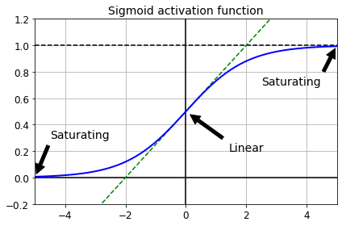
Xavier and He Initialization
[name for name in dir(keras.initializers) if not name.startswith("_")]['Constant',
'GlorotNormal',
'GlorotUniform',
'HeNormal',
'HeUniform',
'Identity',
'Initializer',
'LecunNormal',
'LecunUniform',
'Ones',
'Orthogonal',
'RandomNormal',
'RandomUniform',
'TruncatedNormal',
'VarianceScaling',
'Zeros',
'constant',
'deserialize',
'get',
'glorot_normal',
'glorot_uniform',
'he_normal',
'he_uniform',
'identity',
'lecun_normal',
'lecun_uniform',
'ones',
'orthogonal',
'random_normal',
'random_uniform',
'serialize',
'truncated_normal',
'variance_scaling',
'zeros']keras.layers.Dense(10, activation="relu", kernel_initializer="he_normal")<tensorflow.python.keras.layers.core.Dense at 0x7ff1b2321690>init = keras.initializers.VarianceScaling(scale=2., mode='fan_avg',
distribution='uniform')
keras.layers.Dense(10, activation="relu", kernel_initializer=init)<tensorflow.python.keras.layers.core.Dense at 0x7ff180a32410>Nonsaturating Activation Functions
Leaky ReLU
def leaky_relu(z, alpha=0.01):
return np.maximum(alpha*z, z)plt.plot(z, leaky_relu(z, 0.05), "b-", linewidth=2)
plt.plot([-5, 5], [0, 0], 'k-')
plt.plot([0, 0], [-0.5, 4.2], 'k-')
plt.grid(True)
props = dict(facecolor='black', shrink=0.1)
plt.annotate('Leak', xytext=(-3.5, 0.5), xy=(-5, -0.2), arrowprops=props, fontsize=14, ha="center")
plt.title("Leaky ReLU activation function", fontsize=14)
plt.axis([-5, 5, -0.5, 4.2])
save_fig("leaky_relu_plot")
plt.show()Saving figure leaky_relu_plot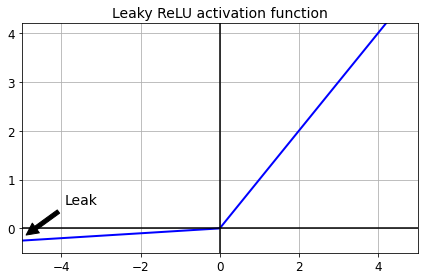
[m for m in dir(keras.activations) if not m.startswith("_")]['deserialize',
'elu',
'exponential',
'gelu',
'get',
'hard_sigmoid',
'linear',
'relu',
'selu',
'serialize',
'sigmoid',
'softmax',
'softplus',
'softsign',
'swish',
'tanh'][m for m in dir(keras.layers) if "relu" in m.lower()]['LeakyReLU', 'PReLU', 'ReLU', 'ThresholdedReLU']Let’s train a neural network on Fashion MNIST using the Leaky ReLU:
(X_train_full, y_train_full), (X_test, y_test) = keras.datasets.fashion_mnist.load_data()
X_train_full = X_train_full / 255.0
X_test = X_test / 255.0
X_valid, X_train = X_train_full[:5000], X_train_full[5000:]
y_valid, y_train = y_train_full[:5000], y_train_full[5000:]tf.random.set_seed(42)
np.random.seed(42)
model = keras.models.Sequential([
keras.layers.Flatten(input_shape=[28, 28]),
keras.layers.Dense(300, kernel_initializer="he_normal"),
keras.layers.LeakyReLU(),
keras.layers.Dense(100, kernel_initializer="he_normal"),
keras.layers.LeakyReLU(),
keras.layers.Dense(10, activation="softmax")
])model.compile(loss="sparse_categorical_crossentropy",
optimizer=keras.optimizers.SGD(learning_rate=1e-3),
metrics=["accuracy"])history = model.fit(X_train, y_train, epochs=10,
validation_data=(X_valid, y_valid))Epoch 1/10
1719/1719 [==============================] - 2s 1ms/step - loss: 1.6314 - accuracy: 0.5054 - val_loss: 0.8886 - val_accuracy: 0.7160
Epoch 2/10
1719/1719 [==============================] - 2s 892us/step - loss: 0.8416 - accuracy: 0.7247 - val_loss: 0.7130 - val_accuracy: 0.7656
Epoch 3/10
1719/1719 [==============================] - 2s 879us/step - loss: 0.7053 - accuracy: 0.7637 - val_loss: 0.6427 - val_accuracy: 0.7898
Epoch 4/10
1719/1719 [==============================] - 2s 883us/step - loss: 0.6325 - accuracy: 0.7908 - val_loss: 0.5900 - val_accuracy: 0.8066
Epoch 5/10
1719/1719 [==============================] - 2s 887us/step - loss: 0.5992 - accuracy: 0.8021 - val_loss: 0.5582 - val_accuracy: 0.8200
Epoch 6/10
1719/1719 [==============================] - 2s 881us/step - loss: 0.5624 - accuracy: 0.8142 - val_loss: 0.5350 - val_accuracy: 0.8238
Epoch 7/10
1719/1719 [==============================] - 2s 892us/step - loss: 0.5379 - accuracy: 0.8217 - val_loss: 0.5157 - val_accuracy: 0.8304
Epoch 8/10
1719/1719 [==============================] - 2s 895us/step - loss: 0.5152 - accuracy: 0.8295 - val_loss: 0.5078 - val_accuracy: 0.8284
Epoch 9/10
1719/1719 [==============================] - 2s 911us/step - loss: 0.5100 - accuracy: 0.8268 - val_loss: 0.4895 - val_accuracy: 0.8390
Epoch 10/10
1719/1719 [==============================] - 2s 897us/step - loss: 0.4918 - accuracy: 0.8340 - val_loss: 0.4817 - val_accuracy: 0.8396Now let’s try PReLU:
tf.random.set_seed(42)
np.random.seed(42)
model = keras.models.Sequential([
keras.layers.Flatten(input_shape=[28, 28]),
keras.layers.Dense(300, kernel_initializer="he_normal"),
keras.layers.PReLU(),
keras.layers.Dense(100, kernel_initializer="he_normal"),
keras.layers.PReLU(),
keras.layers.Dense(10, activation="softmax")
])model.compile(loss="sparse_categorical_crossentropy",
optimizer=keras.optimizers.SGD(learning_rate=1e-3),
metrics=["accuracy"])history = model.fit(X_train, y_train, epochs=10,
validation_data=(X_valid, y_valid))Epoch 1/10
1719/1719 [==============================] - 2s 1ms/step - loss: 1.6969 - accuracy: 0.4974 - val_loss: 0.9255 - val_accuracy: 0.7186
Epoch 2/10
1719/1719 [==============================] - 2s 990us/step - loss: 0.8706 - accuracy: 0.7247 - val_loss: 0.7305 - val_accuracy: 0.7630
Epoch 3/10
1719/1719 [==============================] - 2s 980us/step - loss: 0.7211 - accuracy: 0.7621 - val_loss: 0.6564 - val_accuracy: 0.7882
Epoch 4/10
1719/1719 [==============================] - 2s 985us/step - loss: 0.6447 - accuracy: 0.7879 - val_loss: 0.6003 - val_accuracy: 0.8048
Epoch 5/10
1719/1719 [==============================] - 2s 967us/step - loss: 0.6077 - accuracy: 0.8004 - val_loss: 0.5656 - val_accuracy: 0.8182
Epoch 6/10
1719/1719 [==============================] - 2s 984us/step - loss: 0.5692 - accuracy: 0.8118 - val_loss: 0.5406 - val_accuracy: 0.8236
Epoch 7/10
1719/1719 [==============================] - 2s 1ms/step - loss: 0.5428 - accuracy: 0.8194 - val_loss: 0.5196 - val_accuracy: 0.8314
Epoch 8/10
1719/1719 [==============================] - 2s 983us/step - loss: 0.5193 - accuracy: 0.8284 - val_loss: 0.5113 - val_accuracy: 0.8316
Epoch 9/10
1719/1719 [==============================] - 2s 992us/step - loss: 0.5128 - accuracy: 0.8272 - val_loss: 0.4916 - val_accuracy: 0.8378
Epoch 10/10
1719/1719 [==============================] - 2s 988us/step - loss: 0.4941 - accuracy: 0.8314 - val_loss: 0.4826 - val_accuracy: 0.8398ELU
def elu(z, alpha=1):
return np.where(z < 0, alpha * (np.exp(z) - 1), z)plt.plot(z, elu(z), "b-", linewidth=2)
plt.plot([-5, 5], [0, 0], 'k-')
plt.plot([-5, 5], [-1, -1], 'k--')
plt.plot([0, 0], [-2.2, 3.2], 'k-')
plt.grid(True)
plt.title(r"ELU activation function ($\alpha=1$)", fontsize=14)
plt.axis([-5, 5, -2.2, 3.2])
save_fig("elu_plot")
plt.show()Saving figure elu_plot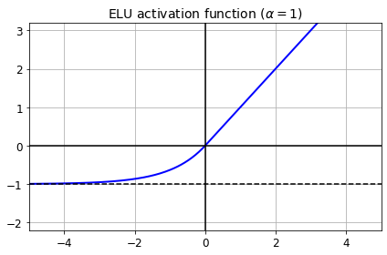
Implementing ELU in TensorFlow is trivial, just specify the activation function when building each layer:
keras.layers.Dense(10, activation="elu")<tensorflow.python.keras.layers.core.Dense at 0x7ff1b25afad0>SELU
This activation function was proposed in this great paper by Günter Klambauer, Thomas Unterthiner and Andreas Mayr, published in June 2017. During training, a neural network composed exclusively of a stack of dense layers using the SELU activation function and LeCun initialization will self-normalize: the output of each layer will tend to preserve the same mean and variance during training, which solves the vanishing/exploding gradients problem. As a result, this activation function outperforms the other activation functions very significantly for such neural nets, so you should really try it out. Unfortunately, the self-normalizing property of the SELU activation function is easily broken: you cannot use ℓ1 or ℓ2 regularization, regular dropout, max-norm, skip connections or other non-sequential topologies (so recurrent neural networks won’t self-normalize). However, in practice it works quite well with sequential CNNs. If you break self-normalization, SELU will not necessarily outperform other activation functions.
from scipy.special import erfc
# alpha and scale to self normalize with mean 0 and standard deviation 1
# (see equation 14 in the paper):
alpha_0_1 = -np.sqrt(2 / np.pi) / (erfc(1/np.sqrt(2)) * np.exp(1/2) - 1)
scale_0_1 = (1 - erfc(1 / np.sqrt(2)) * np.sqrt(np.e)) * np.sqrt(2 * np.pi) * (2 * erfc(np.sqrt(2))*np.e**2 + np.pi*erfc(1/np.sqrt(2))**2*np.e - 2*(2+np.pi)*erfc(1/np.sqrt(2))*np.sqrt(np.e)+np.pi+2)**(-1/2)def selu(z, scale=scale_0_1, alpha=alpha_0_1):
return scale * elu(z, alpha)plt.plot(z, selu(z), "b-", linewidth=2)
plt.plot([-5, 5], [0, 0], 'k-')
plt.plot([-5, 5], [-1.758, -1.758], 'k--')
plt.plot([0, 0], [-2.2, 3.2], 'k-')
plt.grid(True)
plt.title("SELU activation function", fontsize=14)
plt.axis([-5, 5, -2.2, 3.2])
save_fig("selu_plot")
plt.show()Saving figure selu_plot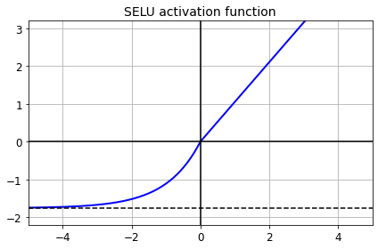
By default, the SELU hyperparameters (scale and alpha) are tuned in such a way that the mean output of each neuron remains close to 0, and the standard deviation remains close to 1 (assuming the inputs are standardized with mean 0 and standard deviation 1 too). Using this activation function, even a 1,000 layer deep neural network preserves roughly mean 0 and standard deviation 1 across all layers, avoiding the exploding/vanishing gradients problem:
np.random.seed(42)
Z = np.random.normal(size=(500, 100)) # standardized inputs
for layer in range(1000):
W = np.random.normal(size=(100, 100), scale=np.sqrt(1 / 100)) # LeCun initialization
Z = selu(np.dot(Z, W))
means = np.mean(Z, axis=0).mean()
stds = np.std(Z, axis=0).mean()
if layer % 100 == 0:
print("Layer {}: mean {:.2f}, std deviation {:.2f}".format(layer, means, stds))Layer 0: mean -0.00, std deviation 1.00
Layer 100: mean 0.02, std deviation 0.96
Layer 200: mean 0.01, std deviation 0.90
Layer 300: mean -0.02, std deviation 0.92
Layer 400: mean 0.05, std deviation 0.89
Layer 500: mean 0.01, std deviation 0.93
Layer 600: mean 0.02, std deviation 0.92
Layer 700: mean -0.02, std deviation 0.90
Layer 800: mean 0.05, std deviation 0.83
Layer 900: mean 0.02, std deviation 1.00Using SELU is easy:
keras.layers.Dense(10, activation="selu",
kernel_initializer="lecun_normal")<tensorflow.python.keras.layers.core.Dense at 0x7ff190832b10>Let’s create a neural net for Fashion MNIST with 100 hidden layers, using the SELU activation function:
np.random.seed(42)
tf.random.set_seed(42)model = keras.models.Sequential()
model.add(keras.layers.Flatten(input_shape=[28, 28]))
model.add(keras.layers.Dense(300, activation="selu",
kernel_initializer="lecun_normal"))
for layer in range(99):
model.add(keras.layers.Dense(100, activation="selu",
kernel_initializer="lecun_normal"))
model.add(keras.layers.Dense(10, activation="softmax"))model.compile(loss="sparse_categorical_crossentropy",
optimizer=keras.optimizers.SGD(learning_rate=1e-3),
metrics=["accuracy"])Now let’s train it. Do not forget to scale the inputs to mean 0 and standard deviation 1:
pixel_means = X_train.mean(axis=0, keepdims=True)
pixel_stds = X_train.std(axis=0, keepdims=True)
X_train_scaled = (X_train - pixel_means) / pixel_stds
X_valid_scaled = (X_valid - pixel_means) / pixel_stds
X_test_scaled = (X_test - pixel_means) / pixel_stdshistory = model.fit(X_train_scaled, y_train, epochs=5,
validation_data=(X_valid_scaled, y_valid))Epoch 1/5
1719/1719 [==============================] - 12s 6ms/step - loss: 1.3556 - accuracy: 0.4808 - val_loss: 0.7711 - val_accuracy: 0.6858
Epoch 2/5
1719/1719 [==============================] - 9s 5ms/step - loss: 0.7537 - accuracy: 0.7235 - val_loss: 0.7534 - val_accuracy: 0.7384
Epoch 3/5
1719/1719 [==============================] - 9s 5ms/step - loss: 0.7451 - accuracy: 0.7357 - val_loss: 0.5943 - val_accuracy: 0.7834
Epoch 4/5
1719/1719 [==============================] - 9s 5ms/step - loss: 0.5699 - accuracy: 0.7906 - val_loss: 0.5434 - val_accuracy: 0.8066
Epoch 5/5
1719/1719 [==============================] - 9s 5ms/step - loss: 0.5569 - accuracy: 0.8051 - val_loss: 0.4907 - val_accuracy: 0.8218Now look at what happens if we try to use the ReLU activation function instead:
np.random.seed(42)
tf.random.set_seed(42)model = keras.models.Sequential()
model.add(keras.layers.Flatten(input_shape=[28, 28]))
model.add(keras.layers.Dense(300, activation="relu", kernel_initializer="he_normal"))
for layer in range(99):
model.add(keras.layers.Dense(100, activation="relu", kernel_initializer="he_normal"))
model.add(keras.layers.Dense(10, activation="softmax"))model.compile(loss="sparse_categorical_crossentropy",
optimizer=keras.optimizers.SGD(learning_rate=1e-3),
metrics=["accuracy"])history = model.fit(X_train_scaled, y_train, epochs=5,
validation_data=(X_valid_scaled, y_valid))Epoch 1/5
1719/1719 [==============================] - 11s 5ms/step - loss: 2.0460 - accuracy: 0.1919 - val_loss: 1.5971 - val_accuracy: 0.3048
Epoch 2/5
1719/1719 [==============================] - 8s 5ms/step - loss: 1.2654 - accuracy: 0.4591 - val_loss: 0.9156 - val_accuracy: 0.6372
Epoch 3/5
1719/1719 [==============================] - 8s 5ms/step - loss: 0.9312 - accuracy: 0.6169 - val_loss: 0.8928 - val_accuracy: 0.6246
Epoch 4/5
1719/1719 [==============================] - 8s 5ms/step - loss: 0.8188 - accuracy: 0.6710 - val_loss: 0.6914 - val_accuracy: 0.7396
Epoch 5/5
1719/1719 [==============================] - 8s 5ms/step - loss: 0.7288 - accuracy: 0.7152 - val_loss: 0.6638 - val_accuracy: 0.7380Not great at all, we suffered from the vanishing/exploding gradients problem.
Batch Normalization
model = keras.models.Sequential([
keras.layers.Flatten(input_shape=[28, 28]),
keras.layers.BatchNormalization(),
keras.layers.Dense(300, activation="relu"),
keras.layers.BatchNormalization(),
keras.layers.Dense(100, activation="relu"),
keras.layers.BatchNormalization(),
keras.layers.Dense(10, activation="softmax")
])model.summary()Model: "sequential_4"
_________________________________________________________________
Layer (type) Output Shape Param #
=================================================================
flatten_4 (Flatten) (None, 784) 0
_________________________________________________________________
batch_normalization (BatchNo (None, 784) 3136
_________________________________________________________________
dense_212 (Dense) (None, 300) 235500
_________________________________________________________________
batch_normalization_1 (Batch (None, 300) 1200
_________________________________________________________________
dense_213 (Dense) (None, 100) 30100
_________________________________________________________________
batch_normalization_2 (Batch (None, 100) 400
_________________________________________________________________
dense_214 (Dense) (None, 10) 1010
=================================================================
Total params: 271,346
Trainable params: 268,978
Non-trainable params: 2,368
_________________________________________________________________bn1 = model.layers[1]
[(var.name, var.trainable) for var in bn1.variables][('batch_normalization/gamma:0', True),
('batch_normalization/beta:0', True),
('batch_normalization/moving_mean:0', False),
('batch_normalization/moving_variance:0', False)]#bn1.updates #deprecatedmodel.compile(loss="sparse_categorical_crossentropy",
optimizer=keras.optimizers.SGD(learning_rate=1e-3),
metrics=["accuracy"])history = model.fit(X_train, y_train, epochs=10,
validation_data=(X_valid, y_valid))Epoch 1/10
1719/1719 [==============================] - 3s 1ms/step - loss: 1.2287 - accuracy: 0.5993 - val_loss: 0.5526 - val_accuracy: 0.8230
Epoch 2/10
1719/1719 [==============================] - 2s 1ms/step - loss: 0.5996 - accuracy: 0.7959 - val_loss: 0.4725 - val_accuracy: 0.8468
Epoch 3/10
1719/1719 [==============================] - 2s 1ms/step - loss: 0.5312 - accuracy: 0.8168 - val_loss: 0.4375 - val_accuracy: 0.8558
Epoch 4/10
1719/1719 [==============================] - 2s 1ms/step - loss: 0.4884 - accuracy: 0.8294 - val_loss: 0.4153 - val_accuracy: 0.8596
Epoch 5/10
1719/1719 [==============================] - 2s 1ms/step - loss: 0.4717 - accuracy: 0.8343 - val_loss: 0.3997 - val_accuracy: 0.8640
Epoch 6/10
1719/1719 [==============================] - 2s 1ms/step - loss: 0.4420 - accuracy: 0.8461 - val_loss: 0.3867 - val_accuracy: 0.8694
Epoch 7/10
1719/1719 [==============================] - 2s 1ms/step - loss: 0.4285 - accuracy: 0.8496 - val_loss: 0.3763 - val_accuracy: 0.8710
Epoch 8/10
1719/1719 [==============================] - 2s 1ms/step - loss: 0.4086 - accuracy: 0.8552 - val_loss: 0.3711 - val_accuracy: 0.8740
Epoch 9/10
1719/1719 [==============================] - 2s 1ms/step - loss: 0.4079 - accuracy: 0.8566 - val_loss: 0.3631 - val_accuracy: 0.8752
Epoch 10/10
1719/1719 [==============================] - 2s 1ms/step - loss: 0.3903 - accuracy: 0.8617 - val_loss: 0.3573 - val_accuracy: 0.8750Sometimes applying BN before the activation function works better (there’s a debate on this topic). Moreover, the layer before a BatchNormalization layer does not need to have bias terms, since the BatchNormalization layer has some as well, it would be a waste of parameters, so you can set use_bias=False when creating those layers:
model = keras.models.Sequential([
keras.layers.Flatten(input_shape=[28, 28]),
keras.layers.BatchNormalization(),
keras.layers.Dense(300, use_bias=False),
keras.layers.BatchNormalization(),
keras.layers.Activation("relu"),
keras.layers.Dense(100, use_bias=False),
keras.layers.BatchNormalization(),
keras.layers.Activation("relu"),
keras.layers.Dense(10, activation="softmax")
])model.compile(loss="sparse_categorical_crossentropy",
optimizer=keras.optimizers.SGD(learning_rate=1e-3),
metrics=["accuracy"])history = model.fit(X_train, y_train, epochs=10,
validation_data=(X_valid, y_valid))Epoch 1/10
1719/1719 [==============================] - 3s 1ms/step - loss: 1.3677 - accuracy: 0.5604 - val_loss: 0.6767 - val_accuracy: 0.7812
Epoch 2/10
1719/1719 [==============================] - 2s 1ms/step - loss: 0.7136 - accuracy: 0.7702 - val_loss: 0.5566 - val_accuracy: 0.8184
Epoch 3/10
1719/1719 [==============================] - 2s 1ms/step - loss: 0.6123 - accuracy: 0.7990 - val_loss: 0.5007 - val_accuracy: 0.8360
Epoch 4/10
1719/1719 [==============================] - 2s 1ms/step - loss: 0.5547 - accuracy: 0.8148 - val_loss: 0.4666 - val_accuracy: 0.8448
Epoch 5/10
1719/1719 [==============================] - 2s 1ms/step - loss: 0.5255 - accuracy: 0.8230 - val_loss: 0.4434 - val_accuracy: 0.8534
Epoch 6/10
1719/1719 [==============================] - 2s 1ms/step - loss: 0.4947 - accuracy: 0.8328 - val_loss: 0.4263 - val_accuracy: 0.8550
Epoch 7/10
1719/1719 [==============================] - 2s 1ms/step - loss: 0.4736 - accuracy: 0.8385 - val_loss: 0.4130 - val_accuracy: 0.8566
Epoch 8/10
1719/1719 [==============================] - 2s 1ms/step - loss: 0.4550 - accuracy: 0.8446 - val_loss: 0.4035 - val_accuracy: 0.8612
Epoch 9/10
1719/1719 [==============================] - 2s 1ms/step - loss: 0.4495 - accuracy: 0.8440 - val_loss: 0.3943 - val_accuracy: 0.8638
Epoch 10/10
1719/1719 [==============================] - 2s 1ms/step - loss: 0.4333 - accuracy: 0.8494 - val_loss: 0.3875 - val_accuracy: 0.8660Gradient Clipping
All Keras optimizers accept clipnorm or clipvalue arguments:
optimizer = keras.optimizers.SGD(clipvalue=1.0)optimizer = keras.optimizers.SGD(clipnorm=1.0)Reusing Pretrained Layers
Reusing a Keras model
Let’s split the fashion MNIST training set in two: * X_train_A: all images of all items except for sandals and shirts (classes 5 and 6). * X_train_B: a much smaller training set of just the first 200 images of sandals or shirts.
The validation set and the test set are also split this way, but without restricting the number of images.
We will train a model on set A (classification task with 8 classes), and try to reuse it to tackle set B (binary classification). We hope to transfer a little bit of knowledge from task A to task B, since classes in set A (sneakers, ankle boots, coats, t-shirts, etc.) are somewhat similar to classes in set B (sandals and shirts). However, since we are using Dense layers, only patterns that occur at the same location can be reused (in contrast, convolutional layers will transfer much better, since learned patterns can be detected anywhere on the image, as we will see in the CNN chapter).
def split_dataset(X, y):
y_5_or_6 = (y == 5) | (y == 6) # sandals or shirts
y_A = y[~y_5_or_6]
y_A[y_A > 6] -= 2 # class indices 7, 8, 9 should be moved to 5, 6, 7
y_B = (y[y_5_or_6] == 6).astype(np.float32) # binary classification task: is it a shirt (class 6)?
return ((X[~y_5_or_6], y_A),
(X[y_5_or_6], y_B))
(X_train_A, y_train_A), (X_train_B, y_train_B) = split_dataset(X_train, y_train)
(X_valid_A, y_valid_A), (X_valid_B, y_valid_B) = split_dataset(X_valid, y_valid)
(X_test_A, y_test_A), (X_test_B, y_test_B) = split_dataset(X_test, y_test)
X_train_B = X_train_B[:200]
y_train_B = y_train_B[:200]X_train_A.shape(43986, 28, 28)X_train_B.shape(200, 28, 28)y_train_A[:30]array([4, 0, 5, 7, 7, 7, 4, 4, 3, 4, 0, 1, 6, 3, 4, 3, 2, 6, 5, 3, 4, 5,
1, 3, 4, 2, 0, 6, 7, 1], dtype=uint8)y_train_B[:30]array([1., 1., 0., 0., 0., 0., 1., 1., 1., 0., 0., 1., 1., 0., 0., 0., 0.,
0., 0., 1., 1., 0., 0., 1., 1., 0., 1., 1., 1., 1.], dtype=float32)tf.random.set_seed(42)
np.random.seed(42)model_A = keras.models.Sequential()
model_A.add(keras.layers.Flatten(input_shape=[28, 28]))
for n_hidden in (300, 100, 50, 50, 50):
model_A.add(keras.layers.Dense(n_hidden, activation="selu"))
model_A.add(keras.layers.Dense(8, activation="softmax"))model_A.compile(loss="sparse_categorical_crossentropy",
optimizer=keras.optimizers.SGD(learning_rate=1e-3),
metrics=["accuracy"])history = model_A.fit(X_train_A, y_train_A, epochs=20,
validation_data=(X_valid_A, y_valid_A))Epoch 1/20
1375/1375 [==============================] - 2s 1ms/step - loss: 0.9249 - accuracy: 0.6994 - val_loss: 0.3896 - val_accuracy: 0.8662
Epoch 2/20
1375/1375 [==============================] - 1s 1ms/step - loss: 0.3651 - accuracy: 0.8745 - val_loss: 0.3288 - val_accuracy: 0.8827
Epoch 3/20
1375/1375 [==============================] - 1s 989us/step - loss: 0.3182 - accuracy: 0.8897 - val_loss: 0.3013 - val_accuracy: 0.8991
Epoch 4/20
1375/1375 [==============================] - 1s 1ms/step - loss: 0.3048 - accuracy: 0.8954 - val_loss: 0.2896 - val_accuracy: 0.9021
Epoch 5/20
1375/1375 [==============================] - 1s 1ms/step - loss: 0.2804 - accuracy: 0.9029 - val_loss: 0.2773 - val_accuracy: 0.9061
Epoch 6/20
1375/1375 [==============================] - 1s 1ms/step - loss: 0.2701 - accuracy: 0.9075 - val_loss: 0.2735 - val_accuracy: 0.9066
Epoch 7/20
1375/1375 [==============================] - 1s 1ms/step - loss: 0.2627 - accuracy: 0.9093 - val_loss: 0.2721 - val_accuracy: 0.9081
Epoch 8/20
1375/1375 [==============================] - 1s 997us/step - loss: 0.2609 - accuracy: 0.9122 - val_loss: 0.2589 - val_accuracy: 0.9141
Epoch 9/20
1375/1375 [==============================] - 1s 1ms/step - loss: 0.2558 - accuracy: 0.9110 - val_loss: 0.2562 - val_accuracy: 0.9136
Epoch 10/20
1375/1375 [==============================] - 1s 997us/step - loss: 0.2512 - accuracy: 0.9138 - val_loss: 0.2544 - val_accuracy: 0.9160
Epoch 11/20
1375/1375 [==============================] - 1s 1000us/step - loss: 0.2431 - accuracy: 0.9170 - val_loss: 0.2495 - val_accuracy: 0.9153
Epoch 12/20
1375/1375 [==============================] - 1s 995us/step - loss: 0.2422 - accuracy: 0.9168 - val_loss: 0.2515 - val_accuracy: 0.9126
Epoch 13/20
1375/1375 [==============================] - 1s 1ms/step - loss: 0.2360 - accuracy: 0.9181 - val_loss: 0.2446 - val_accuracy: 0.9160
Epoch 14/20
1375/1375 [==============================] - 1s 1ms/step - loss: 0.2266 - accuracy: 0.9232 - val_loss: 0.2415 - val_accuracy: 0.9178
Epoch 15/20
1375/1375 [==============================] - 1s 988us/step - loss: 0.2225 - accuracy: 0.9239 - val_loss: 0.2447 - val_accuracy: 0.9195
Epoch 16/20
1375/1375 [==============================] - 1s 995us/step - loss: 0.2261 - accuracy: 0.9216 - val_loss: 0.2384 - val_accuracy: 0.9198
Epoch 17/20
1375/1375 [==============================] - 1s 1ms/step - loss: 0.2191 - accuracy: 0.9251 - val_loss: 0.2412 - val_accuracy: 0.9175
Epoch 18/20
1375/1375 [==============================] - 1s 991us/step - loss: 0.2171 - accuracy: 0.9254 - val_loss: 0.2429 - val_accuracy: 0.9158
Epoch 19/20
1375/1375 [==============================] - 1s 992us/step - loss: 0.2180 - accuracy: 0.9252 - val_loss: 0.2330 - val_accuracy: 0.9205
Epoch 20/20
1375/1375 [==============================] - 1s 994us/step - loss: 0.2112 - accuracy: 0.9274 - val_loss: 0.2333 - val_accuracy: 0.9200model_A.save("my_model_A.h5")model_B = keras.models.Sequential()
model_B.add(keras.layers.Flatten(input_shape=[28, 28]))
for n_hidden in (300, 100, 50, 50, 50):
model_B.add(keras.layers.Dense(n_hidden, activation="selu"))
model_B.add(keras.layers.Dense(1, activation="sigmoid"))model_B.compile(loss="binary_crossentropy",
optimizer=keras.optimizers.SGD(learning_rate=1e-3),
metrics=["accuracy"])history = model_B.fit(X_train_B, y_train_B, epochs=20,
validation_data=(X_valid_B, y_valid_B))Epoch 1/20
7/7 [==============================] - 0s 29ms/step - loss: 1.0360 - accuracy: 0.4975 - val_loss: 0.6314 - val_accuracy: 0.6004
Epoch 2/20
7/7 [==============================] - 0s 9ms/step - loss: 0.5883 - accuracy: 0.6971 - val_loss: 0.4784 - val_accuracy: 0.8529
Epoch 3/20
7/7 [==============================] - 0s 10ms/step - loss: 0.4380 - accuracy: 0.8854 - val_loss: 0.4102 - val_accuracy: 0.8945
Epoch 4/20
7/7 [==============================] - 0s 10ms/step - loss: 0.4021 - accuracy: 0.8712 - val_loss: 0.3647 - val_accuracy: 0.9178
Epoch 5/20
7/7 [==============================] - 0s 11ms/step - loss: 0.3361 - accuracy: 0.9348 - val_loss: 0.3300 - val_accuracy: 0.9320
Epoch 6/20
7/7 [==============================] - 0s 11ms/step - loss: 0.3113 - accuracy: 0.9233 - val_loss: 0.3019 - val_accuracy: 0.9402
Epoch 7/20
7/7 [==============================] - 0s 11ms/step - loss: 0.2817 - accuracy: 0.9299 - val_loss: 0.2804 - val_accuracy: 0.9422
Epoch 8/20
7/7 [==============================] - 0s 11ms/step - loss: 0.2632 - accuracy: 0.9379 - val_loss: 0.2606 - val_accuracy: 0.9473
Epoch 9/20
7/7 [==============================] - 0s 10ms/step - loss: 0.2373 - accuracy: 0.9481 - val_loss: 0.2428 - val_accuracy: 0.9523
Epoch 10/20
7/7 [==============================] - 0s 11ms/step - loss: 0.2229 - accuracy: 0.9657 - val_loss: 0.2281 - val_accuracy: 0.9544
Epoch 11/20
7/7 [==============================] - 0s 11ms/step - loss: 0.2155 - accuracy: 0.9590 - val_loss: 0.2150 - val_accuracy: 0.9584
Epoch 12/20
7/7 [==============================] - 0s 11ms/step - loss: 0.1834 - accuracy: 0.9738 - val_loss: 0.2036 - val_accuracy: 0.9584
Epoch 13/20
7/7 [==============================] - 0s 10ms/step - loss: 0.1671 - accuracy: 0.9828 - val_loss: 0.1931 - val_accuracy: 0.9615
Epoch 14/20
7/7 [==============================] - 0s 10ms/step - loss: 0.1527 - accuracy: 0.9915 - val_loss: 0.1838 - val_accuracy: 0.9635
Epoch 15/20
7/7 [==============================] - 0s 10ms/step - loss: 0.1595 - accuracy: 0.9904 - val_loss: 0.1746 - val_accuracy: 0.9686
Epoch 16/20
7/7 [==============================] - 0s 11ms/step - loss: 0.1473 - accuracy: 0.9937 - val_loss: 0.1674 - val_accuracy: 0.9686
Epoch 17/20
7/7 [==============================] - 0s 10ms/step - loss: 0.1412 - accuracy: 0.9944 - val_loss: 0.1604 - val_accuracy: 0.9706
Epoch 18/20
7/7 [==============================] - 0s 11ms/step - loss: 0.1242 - accuracy: 0.9931 - val_loss: 0.1539 - val_accuracy: 0.9706
Epoch 19/20
7/7 [==============================] - 0s 11ms/step - loss: 0.1224 - accuracy: 0.9931 - val_loss: 0.1482 - val_accuracy: 0.9716
Epoch 20/20
7/7 [==============================] - 0s 10ms/step - loss: 0.1096 - accuracy: 0.9912 - val_loss: 0.1431 - val_accuracy: 0.9716model_B.summary()Model: "sequential_7"
_________________________________________________________________
Layer (type) Output Shape Param #
=================================================================
flatten_5 (Flatten) (None, 784) 0
_________________________________________________________________
dense_28 (Dense) (None, 300) 235500
_________________________________________________________________
dense_29 (Dense) (None, 100) 30100
_________________________________________________________________
dense_30 (Dense) (None, 50) 5050
_________________________________________________________________
dense_31 (Dense) (None, 50) 2550
_________________________________________________________________
dense_32 (Dense) (None, 50) 2550
_________________________________________________________________
dense_33 (Dense) (None, 1) 51
=================================================================
Total params: 275,801
Trainable params: 275,801
Non-trainable params: 0
_________________________________________________________________model_A = keras.models.load_model("my_model_A.h5")
model_B_on_A = keras.models.Sequential(model_A.layers[:-1])
model_B_on_A.add(keras.layers.Dense(1, activation="sigmoid"))Note that model_B_on_A and model_A actually share layers now, so when we train one, it will update both models. If we want to avoid that, we need to build model_B_on_A on top of a clone of model_A:
model_A_clone = keras.models.clone_model(model_A)
model_A_clone.set_weights(model_A.get_weights())
model_B_on_A = keras.models.Sequential(model_A_clone.layers[:-1])
model_B_on_A.add(keras.layers.Dense(1, activation="sigmoid"))for layer in model_B_on_A.layers[:-1]:
layer.trainable = False
model_B_on_A.compile(loss="binary_crossentropy",
optimizer=keras.optimizers.SGD(learning_rate=1e-3),
metrics=["accuracy"])history = model_B_on_A.fit(X_train_B, y_train_B, epochs=4,
validation_data=(X_valid_B, y_valid_B))
for layer in model_B_on_A.layers[:-1]:
layer.trainable = True
model_B_on_A.compile(loss="binary_crossentropy",
optimizer=keras.optimizers.SGD(learning_rate=1e-3),
metrics=["accuracy"])
history = model_B_on_A.fit(X_train_B, y_train_B, epochs=16,
validation_data=(X_valid_B, y_valid_B))Epoch 1/4
7/7 [==============================] - 0s 29ms/step - loss: 0.2575 - accuracy: 0.9487 - val_loss: 0.2797 - val_accuracy: 0.9270
Epoch 2/4
7/7 [==============================] - 0s 9ms/step - loss: 0.2566 - accuracy: 0.9371 - val_loss: 0.2701 - val_accuracy: 0.9300
Epoch 3/4
7/7 [==============================] - 0s 9ms/step - loss: 0.2473 - accuracy: 0.9332 - val_loss: 0.2613 - val_accuracy: 0.9341
Epoch 4/4
7/7 [==============================] - 0s 10ms/step - loss: 0.2450 - accuracy: 0.9463 - val_loss: 0.2531 - val_accuracy: 0.9391
Epoch 1/16
7/7 [==============================] - 1s 29ms/step - loss: 0.2106 - accuracy: 0.9524 - val_loss: 0.2045 - val_accuracy: 0.9615
Epoch 2/16
7/7 [==============================] - 0s 9ms/step - loss: 0.1738 - accuracy: 0.9526 - val_loss: 0.1719 - val_accuracy: 0.9706
Epoch 3/16
7/7 [==============================] - 0s 9ms/step - loss: 0.1451 - accuracy: 0.9660 - val_loss: 0.1491 - val_accuracy: 0.9807
Epoch 4/16
7/7 [==============================] - 0s 9ms/step - loss: 0.1242 - accuracy: 0.9717 - val_loss: 0.1325 - val_accuracy: 0.9817
Epoch 5/16
7/7 [==============================] - 0s 11ms/step - loss: 0.1078 - accuracy: 0.9855 - val_loss: 0.1200 - val_accuracy: 0.9848
Epoch 6/16
7/7 [==============================] - 0s 11ms/step - loss: 0.1075 - accuracy: 0.9931 - val_loss: 0.1101 - val_accuracy: 0.9858
Epoch 7/16
7/7 [==============================] - 0s 11ms/step - loss: 0.0893 - accuracy: 0.9950 - val_loss: 0.1020 - val_accuracy: 0.9858
Epoch 8/16
7/7 [==============================] - 0s 10ms/step - loss: 0.0815 - accuracy: 0.9950 - val_loss: 0.0953 - val_accuracy: 0.9868
Epoch 9/16
7/7 [==============================] - 0s 10ms/step - loss: 0.0640 - accuracy: 0.9973 - val_loss: 0.0892 - val_accuracy: 0.9868
Epoch 10/16
7/7 [==============================] - 0s 10ms/step - loss: 0.0641 - accuracy: 0.9931 - val_loss: 0.0844 - val_accuracy: 0.9878
Epoch 11/16
7/7 [==============================] - 0s 11ms/step - loss: 0.0609 - accuracy: 0.9931 - val_loss: 0.0800 - val_accuracy: 0.9888
Epoch 12/16
7/7 [==============================] - 0s 11ms/step - loss: 0.0641 - accuracy: 1.0000 - val_loss: 0.0762 - val_accuracy: 0.9888
Epoch 13/16
7/7 [==============================] - 0s 10ms/step - loss: 0.0478 - accuracy: 1.0000 - val_loss: 0.0728 - val_accuracy: 0.9888
Epoch 14/16
7/7 [==============================] - 0s 10ms/step - loss: 0.0444 - accuracy: 1.0000 - val_loss: 0.0700 - val_accuracy: 0.9878
Epoch 15/16
7/7 [==============================] - 0s 11ms/step - loss: 0.0490 - accuracy: 1.0000 - val_loss: 0.0675 - val_accuracy: 0.9878
Epoch 16/16
7/7 [==============================] - 0s 11ms/step - loss: 0.0434 - accuracy: 1.0000 - val_loss: 0.0652 - val_accuracy: 0.9878So, what’s the final verdict?
model_B.evaluate(X_test_B, y_test_B)63/63 [==============================] - 0s 714us/step - loss: 0.1408 - accuracy: 0.9705[0.1408407837152481, 0.9704999923706055]model_B_on_A.evaluate(X_test_B, y_test_B)63/63 [==============================] - 0s 751us/step - loss: 0.0562 - accuracy: 0.9940[0.0561506561934948, 0.9940000176429749]Great! We got quite a bit of transfer: the error rate dropped by a factor of 4.9!
(100 - 97.05) / (100 - 99.40)4.916666666666718Faster Optimizers
Momentum optimization
optimizer = keras.optimizers.SGD(learning_rate=0.001, momentum=0.9)Nesterov Accelerated Gradient
optimizer = keras.optimizers.SGD(learning_rate=0.001, momentum=0.9, nesterov=True)AdaGrad
optimizer = keras.optimizers.Adagrad(learning_rate=0.001)RMSProp
optimizer = keras.optimizers.RMSprop(learning_rate=0.001, rho=0.9)Adam Optimization
optimizer = keras.optimizers.Adam(learning_rate=0.001, beta_1=0.9, beta_2=0.999)Adamax Optimization
optimizer = keras.optimizers.Adamax(learning_rate=0.001, beta_1=0.9, beta_2=0.999)Nadam Optimization
optimizer = keras.optimizers.Nadam(learning_rate=0.001, beta_1=0.9, beta_2=0.999)Learning Rate Scheduling
Power Scheduling
lr = lr0 / (1 + steps / s)**c * Keras uses c=1 and s = 1 / decay
optimizer = keras.optimizers.SGD(learning_rate=0.01, decay=1e-4)model = keras.models.Sequential([
keras.layers.Flatten(input_shape=[28, 28]),
keras.layers.Dense(300, activation="selu", kernel_initializer="lecun_normal"),
keras.layers.Dense(100, activation="selu", kernel_initializer="lecun_normal"),
keras.layers.Dense(10, activation="softmax")
])
model.compile(loss="sparse_categorical_crossentropy", optimizer=optimizer, metrics=["accuracy"])n_epochs = 25
history = model.fit(X_train_scaled, y_train, epochs=n_epochs,
validation_data=(X_valid_scaled, y_valid))Epoch 1/25
1719/1719 [==============================] - 2s 1ms/step - loss: 0.5980 - accuracy: 0.7933 - val_loss: 0.4031 - val_accuracy: 0.8598
Epoch 2/25
1719/1719 [==============================] - 2s 954us/step - loss: 0.3829 - accuracy: 0.8636 - val_loss: 0.3714 - val_accuracy: 0.8720
Epoch 3/25
1719/1719 [==============================] - 2s 943us/step - loss: 0.3491 - accuracy: 0.8771 - val_loss: 0.3746 - val_accuracy: 0.8738
Epoch 4/25
1719/1719 [==============================] - 2s 954us/step - loss: 0.3277 - accuracy: 0.8814 - val_loss: 0.3502 - val_accuracy: 0.8798
Epoch 5/25
1719/1719 [==============================] - 2s 934us/step - loss: 0.3172 - accuracy: 0.8856 - val_loss: 0.3453 - val_accuracy: 0.8780
Epoch 6/25
1719/1719 [==============================] - 2s 919us/step - loss: 0.2922 - accuracy: 0.8940 - val_loss: 0.3419 - val_accuracy: 0.8820
Epoch 7/25
1719/1719 [==============================] - 2s 921us/step - loss: 0.2870 - accuracy: 0.8973 - val_loss: 0.3362 - val_accuracy: 0.8872
Epoch 8/25
1719/1719 [==============================] - 2s 925us/step - loss: 0.2720 - accuracy: 0.9032 - val_loss: 0.3415 - val_accuracy: 0.8830
Epoch 9/25
1719/1719 [==============================] - 2s 929us/step - loss: 0.2730 - accuracy: 0.9004 - val_loss: 0.3297 - val_accuracy: 0.8864
Epoch 10/25
1719/1719 [==============================] - 2s 928us/step - loss: 0.2585 - accuracy: 0.9068 - val_loss: 0.3269 - val_accuracy: 0.8888
Epoch 11/25
1719/1719 [==============================] - 2s 932us/step - loss: 0.2529 - accuracy: 0.9100 - val_loss: 0.3280 - val_accuracy: 0.8878
Epoch 12/25
1719/1719 [==============================] - 2s 954us/step - loss: 0.2485 - accuracy: 0.9101 - val_loss: 0.3343 - val_accuracy: 0.8822
Epoch 13/25
1719/1719 [==============================] - 2s 964us/step - loss: 0.2420 - accuracy: 0.9148 - val_loss: 0.3266 - val_accuracy: 0.8890
Epoch 14/25
1719/1719 [==============================] - 2s 1ms/step - loss: 0.2373 - accuracy: 0.9144 - val_loss: 0.3299 - val_accuracy: 0.8890
Epoch 15/25
1719/1719 [==============================] - 2s 1ms/step - loss: 0.2363 - accuracy: 0.9154 - val_loss: 0.3255 - val_accuracy: 0.8874
Epoch 16/25
1719/1719 [==============================] - 2s 1ms/step - loss: 0.2309 - accuracy: 0.9181 - val_loss: 0.3217 - val_accuracy: 0.8910
Epoch 17/25
1719/1719 [==============================] - 2s 1ms/step - loss: 0.2235 - accuracy: 0.9211 - val_loss: 0.3248 - val_accuracy: 0.8914
Epoch 18/25
1719/1719 [==============================] - 2s 1ms/step - loss: 0.2247 - accuracy: 0.9194 - val_loss: 0.3202 - val_accuracy: 0.8934
Epoch 19/25
1719/1719 [==============================] - 2s 1ms/step - loss: 0.2235 - accuracy: 0.9218 - val_loss: 0.3243 - val_accuracy: 0.8906
Epoch 20/25
1719/1719 [==============================] - 2s 1ms/step - loss: 0.2227 - accuracy: 0.9225 - val_loss: 0.3224 - val_accuracy: 0.8900
Epoch 21/25
1719/1719 [==============================] - 2s 1ms/step - loss: 0.2193 - accuracy: 0.9230 - val_loss: 0.3221 - val_accuracy: 0.8912
Epoch 22/25
1719/1719 [==============================] - 2s 1ms/step - loss: 0.2163 - accuracy: 0.9227 - val_loss: 0.3195 - val_accuracy: 0.8948
Epoch 23/25
1719/1719 [==============================] - 2s 997us/step - loss: 0.2127 - accuracy: 0.9252 - val_loss: 0.3208 - val_accuracy: 0.8908
Epoch 24/25
1719/1719 [==============================] - 2s 1ms/step - loss: 0.2076 - accuracy: 0.9273 - val_loss: 0.3226 - val_accuracy: 0.8902
Epoch 25/25
1719/1719 [==============================] - 2s 999us/step - loss: 0.2104 - accuracy: 0.9250 - val_loss: 0.3225 - val_accuracy: 0.8924import math
learning_rate = 0.01
decay = 1e-4
batch_size = 32
n_steps_per_epoch = math.ceil(len(X_train) / batch_size)
epochs = np.arange(n_epochs)
lrs = learning_rate / (1 + decay * epochs * n_steps_per_epoch)
plt.plot(epochs, lrs, "o-")
plt.axis([0, n_epochs - 1, 0, 0.01])
plt.xlabel("Epoch")
plt.ylabel("Learning Rate")
plt.title("Power Scheduling", fontsize=14)
plt.grid(True)
plt.show()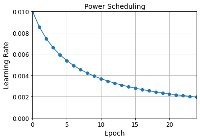
Exponential Scheduling
lr = lr0 * 0.1**(epoch / s)
def exponential_decay_fn(epoch):
return 0.01 * 0.1**(epoch / 20)def exponential_decay(lr0, s):
def exponential_decay_fn(epoch):
return lr0 * 0.1**(epoch / s)
return exponential_decay_fn
exponential_decay_fn = exponential_decay(lr0=0.01, s=20)model = keras.models.Sequential([
keras.layers.Flatten(input_shape=[28, 28]),
keras.layers.Dense(300, activation="selu", kernel_initializer="lecun_normal"),
keras.layers.Dense(100, activation="selu", kernel_initializer="lecun_normal"),
keras.layers.Dense(10, activation="softmax")
])
model.compile(loss="sparse_categorical_crossentropy", optimizer="nadam", metrics=["accuracy"])
n_epochs = 25lr_scheduler = keras.callbacks.LearningRateScheduler(exponential_decay_fn)
history = model.fit(X_train_scaled, y_train, epochs=n_epochs,
validation_data=(X_valid_scaled, y_valid),
callbacks=[lr_scheduler])Epoch 1/25
1719/1719 [==============================] - 4s 2ms/step - loss: 1.1122 - accuracy: 0.7363 - val_loss: 0.8947 - val_accuracy: 0.7496
Epoch 2/25
1719/1719 [==============================] - 3s 2ms/step - loss: 0.7354 - accuracy: 0.7825 - val_loss: 0.6059 - val_accuracy: 0.8122
Epoch 3/25
1719/1719 [==============================] - 3s 2ms/step - loss: 0.5973 - accuracy: 0.8175 - val_loss: 0.8195 - val_accuracy: 0.7754
Epoch 4/25
1719/1719 [==============================] - 3s 2ms/step - loss: 0.6040 - accuracy: 0.8148 - val_loss: 0.6135 - val_accuracy: 0.8398
Epoch 5/25
1719/1719 [==============================] - 3s 2ms/step - loss: 0.5462 - accuracy: 0.8323 - val_loss: 0.5075 - val_accuracy: 0.8490
Epoch 6/25
1719/1719 [==============================] - 4s 2ms/step - loss: 0.4479 - accuracy: 0.8555 - val_loss: 0.4538 - val_accuracy: 0.8502
Epoch 7/25
1719/1719 [==============================] - 4s 2ms/step - loss: 0.4225 - accuracy: 0.8622 - val_loss: 0.4792 - val_accuracy: 0.8524
Epoch 8/25
1719/1719 [==============================] - 4s 2ms/step - loss: 0.3873 - accuracy: 0.8678 - val_loss: 0.5517 - val_accuracy: 0.8448
Epoch 9/25
1719/1719 [==============================] - 3s 2ms/step - loss: 0.3635 - accuracy: 0.8767 - val_loss: 0.5312 - val_accuracy: 0.8600
Epoch 10/25
1719/1719 [==============================] - 3s 2ms/step - loss: 0.3353 - accuracy: 0.8840 - val_loss: 0.4671 - val_accuracy: 0.8660
Epoch 11/25
1719/1719 [==============================] - 4s 2ms/step - loss: 0.3108 - accuracy: 0.8927 - val_loss: 0.4885 - val_accuracy: 0.8670
Epoch 12/25
1719/1719 [==============================] - 4s 2ms/step - loss: 0.2895 - accuracy: 0.8987 - val_loss: 0.4698 - val_accuracy: 0.8636
Epoch 13/25
1719/1719 [==============================] - 4s 2ms/step - loss: 0.2660 - accuracy: 0.9071 - val_loss: 0.4558 - val_accuracy: 0.8820
Epoch 14/25
1719/1719 [==============================] - 4s 2ms/step - loss: 0.2442 - accuracy: 0.9153 - val_loss: 0.4325 - val_accuracy: 0.8774
Epoch 15/25
1719/1719 [==============================] - 4s 2ms/step - loss: 0.2375 - accuracy: 0.9177 - val_loss: 0.4703 - val_accuracy: 0.8800
Epoch 16/25
1719/1719 [==============================] - 4s 2ms/step - loss: 0.2196 - accuracy: 0.9231 - val_loss: 0.4657 - val_accuracy: 0.8870
Epoch 17/25
1719/1719 [==============================] - 4s 2ms/step - loss: 0.2013 - accuracy: 0.9312 - val_loss: 0.5023 - val_accuracy: 0.8760
Epoch 18/25
1719/1719 [==============================] - 4s 2ms/step - loss: 0.1938 - accuracy: 0.9331 - val_loss: 0.4782 - val_accuracy: 0.8856
Epoch 19/25
1719/1719 [==============================] - 4s 2ms/step - loss: 0.1774 - accuracy: 0.9394 - val_loss: 0.4815 - val_accuracy: 0.8898
Epoch 20/25
1719/1719 [==============================] - 4s 2ms/step - loss: 0.1703 - accuracy: 0.9418 - val_loss: 0.4674 - val_accuracy: 0.8902
Epoch 21/25
1719/1719 [==============================] - 3s 2ms/step - loss: 0.1611 - accuracy: 0.9462 - val_loss: 0.5116 - val_accuracy: 0.8930
Epoch 22/25
1719/1719 [==============================] - 4s 2ms/step - loss: 0.1530 - accuracy: 0.9481 - val_loss: 0.5326 - val_accuracy: 0.8934
Epoch 23/25
1719/1719 [==============================] - 3s 2ms/step - loss: 0.1436 - accuracy: 0.9519 - val_loss: 0.5297 - val_accuracy: 0.8902
Epoch 24/25
1719/1719 [==============================] - 4s 2ms/step - loss: 0.1326 - accuracy: 0.9560 - val_loss: 0.5526 - val_accuracy: 0.8930
Epoch 25/25
1719/1719 [==============================] - 4s 2ms/step - loss: 0.1308 - accuracy: 0.9560 - val_loss: 0.5699 - val_accuracy: 0.8928plt.plot(history.epoch, history.history["lr"], "o-")
plt.axis([0, n_epochs - 1, 0, 0.011])
plt.xlabel("Epoch")
plt.ylabel("Learning Rate")
plt.title("Exponential Scheduling", fontsize=14)
plt.grid(True)
plt.show()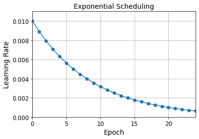
The schedule function can take the current learning rate as a second argument:
def exponential_decay_fn(epoch, lr):
return lr * 0.1**(1 / 20)If you want to update the learning rate at each iteration rather than at each epoch, you must write your own callback class:
K = keras.backend
class ExponentialDecay(keras.callbacks.Callback):
def __init__(self, s=40000):
super().__init__()
self.s = s
def on_batch_begin(self, batch, logs=None):
# Note: the `batch` argument is reset at each epoch
lr = K.get_value(self.model.optimizer.learning_rate)
K.set_value(self.model.optimizer.learning_rate, lr * 0.1**(1 / self.s))
def on_epoch_end(self, epoch, logs=None):
logs = logs or {}
logs['lr'] = K.get_value(self.model.optimizer.learning_rate)
model = keras.models.Sequential([
keras.layers.Flatten(input_shape=[28, 28]),
keras.layers.Dense(300, activation="selu", kernel_initializer="lecun_normal"),
keras.layers.Dense(100, activation="selu", kernel_initializer="lecun_normal"),
keras.layers.Dense(10, activation="softmax")
])
lr0 = 0.01
optimizer = keras.optimizers.Nadam(learning_rate=lr0)
model.compile(loss="sparse_categorical_crossentropy", optimizer=optimizer, metrics=["accuracy"])
n_epochs = 25
s = 20 * len(X_train) // 32 # number of steps in 20 epochs (batch size = 32)
exp_decay = ExponentialDecay(s)
history = model.fit(X_train_scaled, y_train, epochs=n_epochs,
validation_data=(X_valid_scaled, y_valid),
callbacks=[exp_decay])Epoch 1/25
1719/1719 [==============================] - 5s 3ms/step - loss: 1.1153 - accuracy: 0.7390 - val_loss: 0.9588 - val_accuracy: 0.7338
Epoch 2/25
1719/1719 [==============================] - 4s 2ms/step - loss: 0.6929 - accuracy: 0.7934 - val_loss: 0.5328 - val_accuracy: 0.8318
Epoch 3/25
1719/1719 [==============================] - 4s 2ms/step - loss: 0.6317 - accuracy: 0.8097 - val_loss: 0.7656 - val_accuracy: 0.8278
Epoch 4/25
1719/1719 [==============================] - 4s 2ms/step - loss: 0.5827 - accuracy: 0.8258 - val_loss: 0.5585 - val_accuracy: 0.8382
Epoch 5/25
1719/1719 [==============================] - 4s 2ms/step - loss: 0.5041 - accuracy: 0.8407 - val_loss: 0.5367 - val_accuracy: 0.8574
Epoch 6/25
1719/1719 [==============================] - 4s 3ms/step - loss: 0.4595 - accuracy: 0.8588 - val_loss: 0.6000 - val_accuracy: 0.8516
Epoch 7/25
1719/1719 [==============================] - 4s 2ms/step - loss: 0.4490 - accuracy: 0.8644 - val_loss: 0.4605 - val_accuracy: 0.8648
Epoch 8/25
1719/1719 [==============================] - 4s 3ms/step - loss: 0.3925 - accuracy: 0.8783 - val_loss: 0.5076 - val_accuracy: 0.8616
Epoch 9/25
1719/1719 [==============================] - 4s 2ms/step - loss: 0.4085 - accuracy: 0.8797 - val_loss: 0.4577 - val_accuracy: 0.8650
Epoch 10/25
1719/1719 [==============================] - 4s 3ms/step - loss: 0.3440 - accuracy: 0.8927 - val_loss: 0.5309 - val_accuracy: 0.8762
Epoch 11/25
1719/1719 [==============================] - 4s 3ms/step - loss: 0.3267 - accuracy: 0.8948 - val_loss: 0.4652 - val_accuracy: 0.8792
Epoch 12/25
1719/1719 [==============================] - 4s 3ms/step - loss: 0.3046 - accuracy: 0.9033 - val_loss: 0.4863 - val_accuracy: 0.8692
Epoch 13/25
1719/1719 [==============================] - 5s 3ms/step - loss: 0.2811 - accuracy: 0.9087 - val_loss: 0.4726 - val_accuracy: 0.8770
Epoch 14/25
1719/1719 [==============================] - 5s 3ms/step - loss: 0.2684 - accuracy: 0.9145 - val_loss: 0.4526 - val_accuracy: 0.8760
Epoch 15/25
1719/1719 [==============================] - 5s 3ms/step - loss: 0.2478 - accuracy: 0.9209 - val_loss: 0.4926 - val_accuracy: 0.8838
Epoch 16/25
1719/1719 [==============================] - 5s 3ms/step - loss: 0.2315 - accuracy: 0.9253 - val_loss: 0.4686 - val_accuracy: 0.8840
Epoch 17/25
1719/1719 [==============================] - 5s 3ms/step - loss: 0.2164 - accuracy: 0.9318 - val_loss: 0.4845 - val_accuracy: 0.8858
Epoch 18/25
1719/1719 [==============================] - 4s 3ms/step - loss: 0.2093 - accuracy: 0.9346 - val_loss: 0.4923 - val_accuracy: 0.8834
Epoch 19/25
1719/1719 [==============================] - 5s 3ms/step - loss: 0.1929 - accuracy: 0.9396 - val_loss: 0.4779 - val_accuracy: 0.8880
Epoch 20/25
1719/1719 [==============================] - 5s 3ms/step - loss: 0.1852 - accuracy: 0.9439 - val_loss: 0.4886 - val_accuracy: 0.8868
Epoch 21/25
1719/1719 [==============================] - 5s 3ms/step - loss: 0.1740 - accuracy: 0.9470 - val_loss: 0.5097 - val_accuracy: 0.8852
Epoch 22/25
1719/1719 [==============================] - 5s 3ms/step - loss: 0.1668 - accuracy: 0.9474 - val_loss: 0.5161 - val_accuracy: 0.8898
Epoch 23/25
1719/1719 [==============================] - 4s 2ms/step - loss: 0.1571 - accuracy: 0.9530 - val_loss: 0.5381 - val_accuracy: 0.8886
Epoch 24/25
1719/1719 [==============================] - 4s 2ms/step - loss: 0.1444 - accuracy: 0.9575 - val_loss: 0.5415 - val_accuracy: 0.8910
Epoch 25/25
1719/1719 [==============================] - 5s 3ms/step - loss: 0.1447 - accuracy: 0.9569 - val_loss: 0.5833 - val_accuracy: 0.8880n_steps = n_epochs * len(X_train) // 32
steps = np.arange(n_steps)
lrs = lr0 * 0.1**(steps / s)plt.plot(steps, lrs, "-", linewidth=2)
plt.axis([0, n_steps - 1, 0, lr0 * 1.1])
plt.xlabel("Batch")
plt.ylabel("Learning Rate")
plt.title("Exponential Scheduling (per batch)", fontsize=14)
plt.grid(True)
plt.show()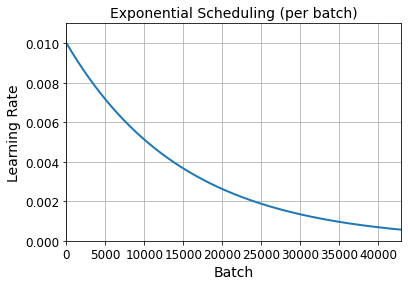
Piecewise Constant Scheduling
def piecewise_constant_fn(epoch):
if epoch < 5:
return 0.01
elif epoch < 15:
return 0.005
else:
return 0.001def piecewise_constant(boundaries, values):
boundaries = np.array([0] + boundaries)
values = np.array(values)
def piecewise_constant_fn(epoch):
return values[np.argmax(boundaries > epoch) - 1]
return piecewise_constant_fn
piecewise_constant_fn = piecewise_constant([5, 15], [0.01, 0.005, 0.001])lr_scheduler = keras.callbacks.LearningRateScheduler(piecewise_constant_fn)
model = keras.models.Sequential([
keras.layers.Flatten(input_shape=[28, 28]),
keras.layers.Dense(300, activation="selu", kernel_initializer="lecun_normal"),
keras.layers.Dense(100, activation="selu", kernel_initializer="lecun_normal"),
keras.layers.Dense(10, activation="softmax")
])
model.compile(loss="sparse_categorical_crossentropy", optimizer="nadam", metrics=["accuracy"])
n_epochs = 25
history = model.fit(X_train_scaled, y_train, epochs=n_epochs,
validation_data=(X_valid_scaled, y_valid),
callbacks=[lr_scheduler])Epoch 1/25
1719/1719 [==============================] - 4s 2ms/step - loss: 1.1511 - accuracy: 0.7326 - val_loss: 0.8456 - val_accuracy: 0.7410
Epoch 2/25
1719/1719 [==============================] - 4s 2ms/step - loss: 0.7371 - accuracy: 0.7786 - val_loss: 0.6796 - val_accuracy: 0.8092
Epoch 3/25
1719/1719 [==============================] - 4s 2ms/step - loss: 0.8055 - accuracy: 0.7700 - val_loss: 1.7429 - val_accuracy: 0.4514
Epoch 4/25
1719/1719 [==============================] - 4s 2ms/step - loss: 1.0351 - accuracy: 0.6826 - val_loss: 0.9870 - val_accuracy: 0.6928
Epoch 5/25
1719/1719 [==============================] - 4s 2ms/step - loss: 0.9185 - accuracy: 0.7098 - val_loss: 0.8727 - val_accuracy: 0.6932
Epoch 6/25
1719/1719 [==============================] - 4s 2ms/step - loss: 0.6905 - accuracy: 0.7481 - val_loss: 0.6694 - val_accuracy: 0.7696
Epoch 7/25
1719/1719 [==============================] - 4s 2ms/step - loss: 0.6115 - accuracy: 0.7713 - val_loss: 0.6956 - val_accuracy: 0.7306
Epoch 8/25
1719/1719 [==============================] - 4s 2ms/step - loss: 0.5791 - accuracy: 0.7793 - val_loss: 0.6659 - val_accuracy: 0.7738
Epoch 9/25
1719/1719 [==============================] - 4s 2ms/step - loss: 0.5622 - accuracy: 0.7881 - val_loss: 0.7363 - val_accuracy: 0.7850
Epoch 10/25
1719/1719 [==============================] - 4s 2ms/step - loss: 0.5253 - accuracy: 0.8470 - val_loss: 0.5484 - val_accuracy: 0.8578
Epoch 11/25
1719/1719 [==============================] - 4s 2ms/step - loss: 0.4401 - accuracy: 0.8694 - val_loss: 0.6724 - val_accuracy: 0.8602
Epoch 12/25
1719/1719 [==============================] - 4s 3ms/step - loss: 0.4334 - accuracy: 0.8732 - val_loss: 0.5551 - val_accuracy: 0.8504
Epoch 13/25
1719/1719 [==============================] - 5s 3ms/step - loss: 0.4179 - accuracy: 0.8771 - val_loss: 0.6685 - val_accuracy: 0.8554
Epoch 14/25
1719/1719 [==============================] - 5s 3ms/step - loss: 0.4300 - accuracy: 0.8775 - val_loss: 0.5340 - val_accuracy: 0.8584
Epoch 15/25
1719/1719 [==============================] - 4s 2ms/step - loss: 0.4069 - accuracy: 0.8777 - val_loss: 0.6519 - val_accuracy: 0.8478
Epoch 16/25
1719/1719 [==============================] - 5s 3ms/step - loss: 0.3349 - accuracy: 0.8953 - val_loss: 0.4801 - val_accuracy: 0.8778
Epoch 17/25
1719/1719 [==============================] - 4s 3ms/step - loss: 0.2695 - accuracy: 0.9109 - val_loss: 0.4880 - val_accuracy: 0.8786
Epoch 18/25
1719/1719 [==============================] - 5s 3ms/step - loss: 0.2568 - accuracy: 0.9136 - val_loss: 0.4726 - val_accuracy: 0.8822
Epoch 19/25
1719/1719 [==============================] - 5s 3ms/step - loss: 0.2436 - accuracy: 0.9203 - val_loss: 0.4792 - val_accuracy: 0.8842
Epoch 20/25
1719/1719 [==============================] - 4s 3ms/step - loss: 0.2421 - accuracy: 0.9212 - val_loss: 0.5088 - val_accuracy: 0.8838
Epoch 21/25
1719/1719 [==============================] - 4s 3ms/step - loss: 0.2288 - accuracy: 0.9246 - val_loss: 0.5083 - val_accuracy: 0.8830
Epoch 22/25
1719/1719 [==============================] - 4s 2ms/step - loss: 0.2215 - accuracy: 0.9270 - val_loss: 0.5217 - val_accuracy: 0.8846
Epoch 23/25
1719/1719 [==============================] - 4s 2ms/step - loss: 0.2106 - accuracy: 0.9297 - val_loss: 0.5297 - val_accuracy: 0.8834
Epoch 24/25
1719/1719 [==============================] - 4s 2ms/step - loss: 0.2002 - accuracy: 0.9334 - val_loss: 0.5597 - val_accuracy: 0.8864
Epoch 25/25
1719/1719 [==============================] - 4s 2ms/step - loss: 0.2005 - accuracy: 0.9350 - val_loss: 0.5533 - val_accuracy: 0.8868plt.plot(history.epoch, [piecewise_constant_fn(epoch) for epoch in history.epoch], "o-")
plt.axis([0, n_epochs - 1, 0, 0.011])
plt.xlabel("Epoch")
plt.ylabel("Learning Rate")
plt.title("Piecewise Constant Scheduling", fontsize=14)
plt.grid(True)
plt.show()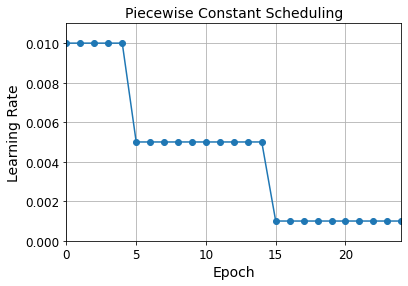
Performance Scheduling
tf.random.set_seed(42)
np.random.seed(42)lr_scheduler = keras.callbacks.ReduceLROnPlateau(factor=0.5, patience=5)
model = keras.models.Sequential([
keras.layers.Flatten(input_shape=[28, 28]),
keras.layers.Dense(300, activation="selu", kernel_initializer="lecun_normal"),
keras.layers.Dense(100, activation="selu", kernel_initializer="lecun_normal"),
keras.layers.Dense(10, activation="softmax")
])
optimizer = keras.optimizers.SGD(learning_rate=0.02, momentum=0.9)
model.compile(loss="sparse_categorical_crossentropy", optimizer=optimizer, metrics=["accuracy"])
n_epochs = 25
history = model.fit(X_train_scaled, y_train, epochs=n_epochs,
validation_data=(X_valid_scaled, y_valid),
callbacks=[lr_scheduler])Epoch 1/25
1719/1719 [==============================] - 2s 1ms/step - loss: 0.7116 - accuracy: 0.7769 - val_loss: 0.4869 - val_accuracy: 0.8478
Epoch 2/25
1719/1719 [==============================] - 2s 947us/step - loss: 0.4912 - accuracy: 0.8390 - val_loss: 0.5958 - val_accuracy: 0.8270
Epoch 3/25
1719/1719 [==============================] - 2s 987us/step - loss: 0.5222 - accuracy: 0.8379 - val_loss: 0.4869 - val_accuracy: 0.8584
Epoch 4/25
1719/1719 [==============================] - 2s 1ms/step - loss: 0.5061 - accuracy: 0.8467 - val_loss: 0.4588 - val_accuracy: 0.8548
Epoch 5/25
1719/1719 [==============================] - 2s 1ms/step - loss: 0.5216 - accuracy: 0.8469 - val_loss: 0.6096 - val_accuracy: 0.8300
Epoch 6/25
1719/1719 [==============================] - 2s 1ms/step - loss: 0.4984 - accuracy: 0.8546 - val_loss: 0.5359 - val_accuracy: 0.8498
Epoch 7/25
1719/1719 [==============================] - 2s 1ms/step - loss: 0.5104 - accuracy: 0.8579 - val_loss: 0.5457 - val_accuracy: 0.8522
Epoch 8/25
1719/1719 [==============================] - 2s 1ms/step - loss: 0.5375 - accuracy: 0.8538 - val_loss: 0.6445 - val_accuracy: 0.8218
Epoch 9/25
1719/1719 [==============================] - 2s 1ms/step - loss: 0.5333 - accuracy: 0.8522 - val_loss: 0.5472 - val_accuracy: 0.8560
Epoch 10/25
1719/1719 [==============================] - 2s 1ms/step - loss: 0.3280 - accuracy: 0.8902 - val_loss: 0.3826 - val_accuracy: 0.8876
Epoch 11/25
1719/1719 [==============================] - 2s 1ms/step - loss: 0.2410 - accuracy: 0.9135 - val_loss: 0.4025 - val_accuracy: 0.8876
Epoch 12/25
1719/1719 [==============================] - 2s 1ms/step - loss: 0.2266 - accuracy: 0.9180 - val_loss: 0.4540 - val_accuracy: 0.8694
Epoch 13/25
1719/1719 [==============================] - 2s 1ms/step - loss: 0.2129 - accuracy: 0.9221 - val_loss: 0.4310 - val_accuracy: 0.8866
Epoch 14/25
1719/1719 [==============================] - 2s 1ms/step - loss: 0.1959 - accuracy: 0.9270 - val_loss: 0.4406 - val_accuracy: 0.8814
Epoch 15/25
1719/1719 [==============================] - 2s 1ms/step - loss: 0.1975 - accuracy: 0.9277 - val_loss: 0.4341 - val_accuracy: 0.8840
Epoch 16/25
1719/1719 [==============================] - 2s 1ms/step - loss: 0.1409 - accuracy: 0.9464 - val_loss: 0.4220 - val_accuracy: 0.8932
Epoch 17/25
1719/1719 [==============================] - 2s 1ms/step - loss: 0.1181 - accuracy: 0.9542 - val_loss: 0.4409 - val_accuracy: 0.8948
Epoch 18/25
1719/1719 [==============================] - 2s 1ms/step - loss: 0.1124 - accuracy: 0.9560 - val_loss: 0.4480 - val_accuracy: 0.8898
Epoch 19/25
1719/1719 [==============================] - 2s 1ms/step - loss: 0.1070 - accuracy: 0.9579 - val_loss: 0.4610 - val_accuracy: 0.8932
Epoch 20/25
1719/1719 [==============================] - 2s 1ms/step - loss: 0.1016 - accuracy: 0.9606 - val_loss: 0.4845 - val_accuracy: 0.8918
Epoch 21/25
1719/1719 [==============================] - 2s 1ms/step - loss: 0.0848 - accuracy: 0.9686 - val_loss: 0.4829 - val_accuracy: 0.8934
Epoch 22/25
1719/1719 [==============================] - 2s 1ms/step - loss: 0.0792 - accuracy: 0.9700 - val_loss: 0.4906 - val_accuracy: 0.8952
Epoch 23/25
1719/1719 [==============================] - 2s 1ms/step - loss: 0.0751 - accuracy: 0.9720 - val_loss: 0.4951 - val_accuracy: 0.8950
Epoch 24/25
1719/1719 [==============================] - 2s 1ms/step - loss: 0.0687 - accuracy: 0.9739 - val_loss: 0.5109 - val_accuracy: 0.8948
Epoch 25/25
1719/1719 [==============================] - 2s 1ms/step - loss: 0.0683 - accuracy: 0.9752 - val_loss: 0.5241 - val_accuracy: 0.8936plt.plot(history.epoch, history.history["lr"], "bo-")
plt.xlabel("Epoch")
plt.ylabel("Learning Rate", color='b')
plt.tick_params('y', colors='b')
plt.gca().set_xlim(0, n_epochs - 1)
plt.grid(True)
ax2 = plt.gca().twinx()
ax2.plot(history.epoch, history.history["val_loss"], "r^-")
ax2.set_ylabel('Validation Loss', color='r')
ax2.tick_params('y', colors='r')
plt.title("Reduce LR on Plateau", fontsize=14)
plt.show()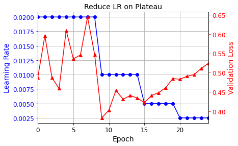
tf.keras schedulers
model = keras.models.Sequential([
keras.layers.Flatten(input_shape=[28, 28]),
keras.layers.Dense(300, activation="selu", kernel_initializer="lecun_normal"),
keras.layers.Dense(100, activation="selu", kernel_initializer="lecun_normal"),
keras.layers.Dense(10, activation="softmax")
])
s = 20 * len(X_train) // 32 # number of steps in 20 epochs (batch size = 32)
learning_rate = keras.optimizers.schedules.ExponentialDecay(0.01, s, 0.1)
optimizer = keras.optimizers.SGD(learning_rate)
model.compile(loss="sparse_categorical_crossentropy", optimizer=optimizer, metrics=["accuracy"])
n_epochs = 25
history = model.fit(X_train_scaled, y_train, epochs=n_epochs,
validation_data=(X_valid_scaled, y_valid))Epoch 1/25
1719/1719 [==============================] - 2s 1ms/step - loss: 0.5995 - accuracy: 0.7923 - val_loss: 0.4095 - val_accuracy: 0.8606
Epoch 2/25
1719/1719 [==============================] - 2s 1ms/step - loss: 0.3890 - accuracy: 0.8613 - val_loss: 0.3738 - val_accuracy: 0.8692
Epoch 3/25
1719/1719 [==============================] - 2s 1ms/step - loss: 0.3530 - accuracy: 0.8772 - val_loss: 0.3735 - val_accuracy: 0.8692
Epoch 4/25
1719/1719 [==============================] - 2s 1ms/step - loss: 0.3296 - accuracy: 0.8813 - val_loss: 0.3494 - val_accuracy: 0.8798
Epoch 5/25
1719/1719 [==============================] - 2s 1ms/step - loss: 0.3178 - accuracy: 0.8867 - val_loss: 0.3430 - val_accuracy: 0.8794
Epoch 6/25
1719/1719 [==============================] - 2s 1ms/step - loss: 0.2930 - accuracy: 0.8951 - val_loss: 0.3414 - val_accuracy: 0.8826
Epoch 7/25
1719/1719 [==============================] - 2s 1ms/step - loss: 0.2854 - accuracy: 0.8985 - val_loss: 0.3354 - val_accuracy: 0.8810
Epoch 8/25
1719/1719 [==============================] - 2s 1ms/step - loss: 0.2714 - accuracy: 0.9039 - val_loss: 0.3364 - val_accuracy: 0.8824
Epoch 9/25
1719/1719 [==============================] - 2s 1ms/step - loss: 0.2714 - accuracy: 0.9047 - val_loss: 0.3265 - val_accuracy: 0.8846
Epoch 10/25
1719/1719 [==============================] - 2s 1ms/step - loss: 0.2570 - accuracy: 0.9084 - val_loss: 0.3238 - val_accuracy: 0.8854
Epoch 11/25
1719/1719 [==============================] - 2s 1ms/step - loss: 0.2502 - accuracy: 0.9117 - val_loss: 0.3250 - val_accuracy: 0.8862
Epoch 12/25
1719/1719 [==============================] - 2s 1ms/step - loss: 0.2453 - accuracy: 0.9145 - val_loss: 0.3299 - val_accuracy: 0.8830
Epoch 13/25
1719/1719 [==============================] - 2s 1ms/step - loss: 0.2408 - accuracy: 0.9154 - val_loss: 0.3219 - val_accuracy: 0.8870
Epoch 14/25
1719/1719 [==============================] - 2s 1ms/step - loss: 0.2380 - accuracy: 0.9154 - val_loss: 0.3221 - val_accuracy: 0.8860
Epoch 15/25
1719/1719 [==============================] - 2s 1ms/step - loss: 0.2378 - accuracy: 0.9166 - val_loss: 0.3208 - val_accuracy: 0.8864
Epoch 16/25
1719/1719 [==============================] - 2s 1ms/step - loss: 0.2318 - accuracy: 0.9191 - val_loss: 0.3184 - val_accuracy: 0.8892
Epoch 17/25
1719/1719 [==============================] - 2s 1ms/step - loss: 0.2266 - accuracy: 0.9212 - val_loss: 0.3197 - val_accuracy: 0.8906
Epoch 18/25
1719/1719 [==============================] - 2s 1ms/step - loss: 0.2284 - accuracy: 0.9185 - val_loss: 0.3169 - val_accuracy: 0.8906
Epoch 19/25
1719/1719 [==============================] - 2s 1ms/step - loss: 0.2286 - accuracy: 0.9205 - val_loss: 0.3197 - val_accuracy: 0.8884
Epoch 20/25
1719/1719 [==============================] - 2s 1ms/step - loss: 0.2288 - accuracy: 0.9211 - val_loss: 0.3169 - val_accuracy: 0.8906
Epoch 21/25
1719/1719 [==============================] - 2s 1ms/step - loss: 0.2265 - accuracy: 0.9212 - val_loss: 0.3179 - val_accuracy: 0.8904
Epoch 22/25
1719/1719 [==============================] - 2s 1ms/step - loss: 0.2258 - accuracy: 0.9205 - val_loss: 0.3163 - val_accuracy: 0.8914
Epoch 23/25
1719/1719 [==============================] - 2s 1ms/step - loss: 0.2224 - accuracy: 0.9226 - val_loss: 0.3170 - val_accuracy: 0.8904
Epoch 24/25
1719/1719 [==============================] - 2s 1ms/step - loss: 0.2182 - accuracy: 0.9244 - val_loss: 0.3165 - val_accuracy: 0.8898
Epoch 25/25
1719/1719 [==============================] - 2s 1ms/step - loss: 0.2224 - accuracy: 0.9229 - val_loss: 0.3164 - val_accuracy: 0.8904For piecewise constant scheduling, try this:
learning_rate = keras.optimizers.schedules.PiecewiseConstantDecay(
boundaries=[5. * n_steps_per_epoch, 15. * n_steps_per_epoch],
values=[0.01, 0.005, 0.001])1Cycle scheduling
K = keras.backend
class ExponentialLearningRate(keras.callbacks.Callback):
def __init__(self, factor):
self.factor = factor
self.rates = []
self.losses = []
def on_batch_end(self, batch, logs):
self.rates.append(K.get_value(self.model.optimizer.learning_rate))
self.losses.append(logs["loss"])
K.set_value(self.model.optimizer.learning_rate, self.model.optimizer.learning_rate * self.factor)
def find_learning_rate(model, X, y, epochs=1, batch_size=32, min_rate=10**-5, max_rate=10):
init_weights = model.get_weights()
iterations = math.ceil(len(X) / batch_size) * epochs
factor = np.exp(np.log(max_rate / min_rate) / iterations)
init_lr = K.get_value(model.optimizer.learning_rate)
K.set_value(model.optimizer.learning_rate, min_rate)
exp_lr = ExponentialLearningRate(factor)
history = model.fit(X, y, epochs=epochs, batch_size=batch_size,
callbacks=[exp_lr])
K.set_value(model.optimizer.learning_rate, init_lr)
model.set_weights(init_weights)
return exp_lr.rates, exp_lr.losses
def plot_lr_vs_loss(rates, losses):
plt.plot(rates, losses)
plt.gca().set_xscale('log')
plt.hlines(min(losses), min(rates), max(rates))
plt.axis([min(rates), max(rates), min(losses), (losses[0] + min(losses)) / 2])
plt.xlabel("Learning rate")
plt.ylabel("Loss")Warning: In the on_batch_end() method, logs["loss"] used to contain the batch loss, but in TensorFlow 2.2.0 it was replaced with the mean loss (since the start of the epoch). This explains why the graph below is much smoother than in the book (if you are using TF 2.2 or above). It also means that there is a lag between the moment the batch loss starts exploding and the moment the explosion becomes clear in the graph. So you should choose a slightly smaller learning rate than you would have chosen with the “noisy” graph. Alternatively, you can tweak the ExponentialLearningRate callback above so it computes the batch loss (based on the current mean loss and the previous mean loss):
class ExponentialLearningRate(keras.callbacks.Callback):
def __init__(self, factor):
self.factor = factor
self.rates = []
self.losses = []
def on_epoch_begin(self, epoch, logs=None):
self.prev_loss = 0
def on_batch_end(self, batch, logs=None):
batch_loss = logs["loss"] * (batch + 1) - self.prev_loss * batch
self.prev_loss = logs["loss"]
self.rates.append(K.get_value(self.model.optimizer.learning_rate))
self.losses.append(batch_loss)
K.set_value(self.model.optimizer.learning_rate, self.model.optimizer.learning_rate * self.factor)tf.random.set_seed(42)
np.random.seed(42)
model = keras.models.Sequential([
keras.layers.Flatten(input_shape=[28, 28]),
keras.layers.Dense(300, activation="selu", kernel_initializer="lecun_normal"),
keras.layers.Dense(100, activation="selu", kernel_initializer="lecun_normal"),
keras.layers.Dense(10, activation="softmax")
])
model.compile(loss="sparse_categorical_crossentropy",
optimizer=keras.optimizers.SGD(learning_rate=1e-3),
metrics=["accuracy"])batch_size = 128
rates, losses = find_learning_rate(model, X_train_scaled, y_train, epochs=1, batch_size=batch_size)
plot_lr_vs_loss(rates, losses)430/430 [==============================] - 1s 2ms/step - loss: nan - accuracy: 0.3120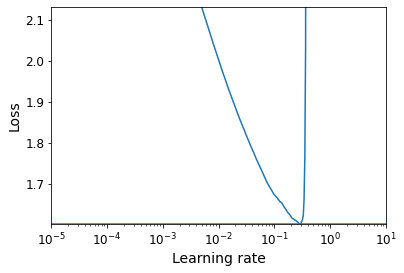
class OneCycleScheduler(keras.callbacks.Callback):
def __init__(self, iterations, max_rate, start_rate=None,
last_iterations=None, last_rate=None):
self.iterations = iterations
self.max_rate = max_rate
self.start_rate = start_rate or max_rate / 10
self.last_iterations = last_iterations or iterations // 10 + 1
self.half_iteration = (iterations - self.last_iterations) // 2
self.last_rate = last_rate or self.start_rate / 1000
self.iteration = 0
def _interpolate(self, iter1, iter2, rate1, rate2):
return ((rate2 - rate1) * (self.iteration - iter1)
/ (iter2 - iter1) + rate1)
def on_batch_begin(self, batch, logs):
if self.iteration < self.half_iteration:
rate = self._interpolate(0, self.half_iteration, self.start_rate, self.max_rate)
elif self.iteration < 2 * self.half_iteration:
rate = self._interpolate(self.half_iteration, 2 * self.half_iteration,
self.max_rate, self.start_rate)
else:
rate = self._interpolate(2 * self.half_iteration, self.iterations,
self.start_rate, self.last_rate)
self.iteration += 1
K.set_value(self.model.optimizer.learning_rate, rate)n_epochs = 25
onecycle = OneCycleScheduler(math.ceil(len(X_train) / batch_size) * n_epochs, max_rate=0.05)
history = model.fit(X_train_scaled, y_train, epochs=n_epochs, batch_size=batch_size,
validation_data=(X_valid_scaled, y_valid),
callbacks=[onecycle])Epoch 1/25
430/430 [==============================] - 1s 2ms/step - loss: 0.6572 - accuracy: 0.7740 - val_loss: 0.4872 - val_accuracy: 0.8338
Epoch 2/25
430/430 [==============================] - 1s 2ms/step - loss: 0.4580 - accuracy: 0.8397 - val_loss: 0.4274 - val_accuracy: 0.8520
Epoch 3/25
430/430 [==============================] - 1s 2ms/step - loss: 0.4121 - accuracy: 0.8545 - val_loss: 0.4116 - val_accuracy: 0.8588
Epoch 4/25
430/430 [==============================] - 1s 2ms/step - loss: 0.3837 - accuracy: 0.8642 - val_loss: 0.3868 - val_accuracy: 0.8688
Epoch 5/25
430/430 [==============================] - 1s 2ms/step - loss: 0.3639 - accuracy: 0.8719 - val_loss: 0.3766 - val_accuracy: 0.8688
Epoch 6/25
430/430 [==============================] - 1s 2ms/step - loss: 0.3456 - accuracy: 0.8775 - val_loss: 0.3739 - val_accuracy: 0.8706
Epoch 7/25
430/430 [==============================] - 1s 2ms/step - loss: 0.3330 - accuracy: 0.8811 - val_loss: 0.3635 - val_accuracy: 0.8708
Epoch 8/25
430/430 [==============================] - 1s 2ms/step - loss: 0.3184 - accuracy: 0.8861 - val_loss: 0.3959 - val_accuracy: 0.8610
Epoch 9/25
430/430 [==============================] - 1s 2ms/step - loss: 0.3065 - accuracy: 0.8890 - val_loss: 0.3475 - val_accuracy: 0.8770
Epoch 10/25
430/430 [==============================] - 1s 2ms/step - loss: 0.2943 - accuracy: 0.8927 - val_loss: 0.3392 - val_accuracy: 0.8806
Epoch 11/25
430/430 [==============================] - 1s 2ms/step - loss: 0.2838 - accuracy: 0.8963 - val_loss: 0.3467 - val_accuracy: 0.8800
Epoch 12/25
430/430 [==============================] - 1s 2ms/step - loss: 0.2707 - accuracy: 0.9024 - val_loss: 0.3646 - val_accuracy: 0.8696
Epoch 13/25
430/430 [==============================] - 1s 2ms/step - loss: 0.2536 - accuracy: 0.9079 - val_loss: 0.3350 - val_accuracy: 0.8842
Epoch 14/25
430/430 [==============================] - 1s 2ms/step - loss: 0.2405 - accuracy: 0.9135 - val_loss: 0.3465 - val_accuracy: 0.8794
Epoch 15/25
430/430 [==============================] - 1s 2ms/step - loss: 0.2279 - accuracy: 0.9185 - val_loss: 0.3257 - val_accuracy: 0.8830
Epoch 16/25
430/430 [==============================] - 1s 2ms/step - loss: 0.2159 - accuracy: 0.9232 - val_loss: 0.3294 - val_accuracy: 0.8824
Epoch 17/25
430/430 [==============================] - 1s 2ms/step - loss: 0.2062 - accuracy: 0.9263 - val_loss: 0.3333 - val_accuracy: 0.8882
Epoch 18/25
430/430 [==============================] - 1s 2ms/step - loss: 0.1978 - accuracy: 0.9301 - val_loss: 0.3235 - val_accuracy: 0.8898
Epoch 19/25
430/430 [==============================] - 1s 2ms/step - loss: 0.1892 - accuracy: 0.9337 - val_loss: 0.3233 - val_accuracy: 0.8906
Epoch 20/25
430/430 [==============================] - 1s 2ms/step - loss: 0.1821 - accuracy: 0.9365 - val_loss: 0.3224 - val_accuracy: 0.8928
Epoch 21/25
430/430 [==============================] - 1s 2ms/step - loss: 0.1752 - accuracy: 0.9400 - val_loss: 0.3220 - val_accuracy: 0.8908
Epoch 22/25
430/430 [==============================] - 1s 2ms/step - loss: 0.1700 - accuracy: 0.9416 - val_loss: 0.3180 - val_accuracy: 0.8962
Epoch 23/25
430/430 [==============================] - 1s 2ms/step - loss: 0.1655 - accuracy: 0.9438 - val_loss: 0.3187 - val_accuracy: 0.8940
Epoch 24/25
430/430 [==============================] - 1s 2ms/step - loss: 0.1627 - accuracy: 0.9454 - val_loss: 0.3177 - val_accuracy: 0.8932
Epoch 25/25
430/430 [==============================] - 1s 2ms/step - loss: 0.1610 - accuracy: 0.9462 - val_loss: 0.3170 - val_accuracy: 0.8934Avoiding Overfitting Through Regularization
\(\ell_1\) and \(\ell_2\) regularization
layer = keras.layers.Dense(100, activation="elu",
kernel_initializer="he_normal",
kernel_regularizer=keras.regularizers.l2(0.01))
# or l1(0.1) for ℓ1 regularization with a factor of 0.1
# or l1_l2(0.1, 0.01) for both ℓ1 and ℓ2 regularization, with factors 0.1 and 0.01 respectivelymodel = keras.models.Sequential([
keras.layers.Flatten(input_shape=[28, 28]),
keras.layers.Dense(300, activation="elu",
kernel_initializer="he_normal",
kernel_regularizer=keras.regularizers.l2(0.01)),
keras.layers.Dense(100, activation="elu",
kernel_initializer="he_normal",
kernel_regularizer=keras.regularizers.l2(0.01)),
keras.layers.Dense(10, activation="softmax",
kernel_regularizer=keras.regularizers.l2(0.01))
])
model.compile(loss="sparse_categorical_crossentropy", optimizer="nadam", metrics=["accuracy"])
n_epochs = 2
history = model.fit(X_train_scaled, y_train, epochs=n_epochs,
validation_data=(X_valid_scaled, y_valid))Epoch 1/2
1719/1719 [==============================] - 6s 3ms/step - loss: 3.2189 - accuracy: 0.7967 - val_loss: 0.7169 - val_accuracy: 0.8340
Epoch 2/2
1719/1719 [==============================] - 5s 3ms/step - loss: 0.7280 - accuracy: 0.8247 - val_loss: 0.6850 - val_accuracy: 0.8376from functools import partial
RegularizedDense = partial(keras.layers.Dense,
activation="elu",
kernel_initializer="he_normal",
kernel_regularizer=keras.regularizers.l2(0.01))
model = keras.models.Sequential([
keras.layers.Flatten(input_shape=[28, 28]),
RegularizedDense(300),
RegularizedDense(100),
RegularizedDense(10, activation="softmax")
])
model.compile(loss="sparse_categorical_crossentropy", optimizer="nadam", metrics=["accuracy"])
n_epochs = 2
history = model.fit(X_train_scaled, y_train, epochs=n_epochs,
validation_data=(X_valid_scaled, y_valid))Epoch 1/2
1719/1719 [==============================] - 6s 3ms/step - loss: 3.2911 - accuracy: 0.7924 - val_loss: 0.7218 - val_accuracy: 0.8310
Epoch 2/2
1719/1719 [==============================] - 5s 3ms/step - loss: 0.7282 - accuracy: 0.8245 - val_loss: 0.6826 - val_accuracy: 0.8382Dropout
model = keras.models.Sequential([
keras.layers.Flatten(input_shape=[28, 28]),
keras.layers.Dropout(rate=0.2),
keras.layers.Dense(300, activation="elu", kernel_initializer="he_normal"),
keras.layers.Dropout(rate=0.2),
keras.layers.Dense(100, activation="elu", kernel_initializer="he_normal"),
keras.layers.Dropout(rate=0.2),
keras.layers.Dense(10, activation="softmax")
])
model.compile(loss="sparse_categorical_crossentropy", optimizer="nadam", metrics=["accuracy"])
n_epochs = 2
history = model.fit(X_train_scaled, y_train, epochs=n_epochs,
validation_data=(X_valid_scaled, y_valid))Epoch 1/2
1719/1719 [==============================] - 6s 3ms/step - loss: 0.7611 - accuracy: 0.7576 - val_loss: 0.3730 - val_accuracy: 0.8644
Epoch 2/2
1719/1719 [==============================] - 5s 3ms/step - loss: 0.4306 - accuracy: 0.8401 - val_loss: 0.3395 - val_accuracy: 0.8722Alpha Dropout
tf.random.set_seed(42)
np.random.seed(42)model = keras.models.Sequential([
keras.layers.Flatten(input_shape=[28, 28]),
keras.layers.AlphaDropout(rate=0.2),
keras.layers.Dense(300, activation="selu", kernel_initializer="lecun_normal"),
keras.layers.AlphaDropout(rate=0.2),
keras.layers.Dense(100, activation="selu", kernel_initializer="lecun_normal"),
keras.layers.AlphaDropout(rate=0.2),
keras.layers.Dense(10, activation="softmax")
])
optimizer = keras.optimizers.SGD(learning_rate=0.01, momentum=0.9, nesterov=True)
model.compile(loss="sparse_categorical_crossentropy", optimizer=optimizer, metrics=["accuracy"])
n_epochs = 20
history = model.fit(X_train_scaled, y_train, epochs=n_epochs,
validation_data=(X_valid_scaled, y_valid))Epoch 1/20
1719/1719 [==============================] - 3s 2ms/step - loss: 0.8023 - accuracy: 0.7146 - val_loss: 0.5781 - val_accuracy: 0.8442
Epoch 2/20
1719/1719 [==============================] - 3s 1ms/step - loss: 0.5663 - accuracy: 0.7905 - val_loss: 0.5182 - val_accuracy: 0.8520
Epoch 3/20
1719/1719 [==============================] - 3s 2ms/step - loss: 0.5264 - accuracy: 0.8054 - val_loss: 0.4874 - val_accuracy: 0.8600
Epoch 4/20
1719/1719 [==============================] - 3s 2ms/step - loss: 0.5126 - accuracy: 0.8092 - val_loss: 0.4890 - val_accuracy: 0.8598
Epoch 5/20
1719/1719 [==============================] - 3s 2ms/step - loss: 0.5071 - accuracy: 0.8133 - val_loss: 0.4266 - val_accuracy: 0.8696
Epoch 6/20
1719/1719 [==============================] - 3s 1ms/step - loss: 0.4793 - accuracy: 0.8198 - val_loss: 0.4585 - val_accuracy: 0.8640
Epoch 7/20
1719/1719 [==============================] - 3s 1ms/step - loss: 0.4724 - accuracy: 0.8262 - val_loss: 0.4740 - val_accuracy: 0.8612
Epoch 8/20
1719/1719 [==============================] - 3s 2ms/step - loss: 0.4570 - accuracy: 0.8297 - val_loss: 0.4295 - val_accuracy: 0.8656
Epoch 9/20
1719/1719 [==============================] - 3s 2ms/step - loss: 0.4632 - accuracy: 0.8286 - val_loss: 0.4357 - val_accuracy: 0.8736
Epoch 10/20
1719/1719 [==============================] - 3s 2ms/step - loss: 0.4552 - accuracy: 0.8340 - val_loss: 0.4366 - val_accuracy: 0.8674
Epoch 11/20
1719/1719 [==============================] - 3s 1ms/step - loss: 0.4461 - accuracy: 0.8346 - val_loss: 0.4278 - val_accuracy: 0.8684
Epoch 12/20
1719/1719 [==============================] - 3s 2ms/step - loss: 0.4419 - accuracy: 0.8351 - val_loss: 0.5086 - val_accuracy: 0.8558
Epoch 13/20
1719/1719 [==============================] - 3s 2ms/step - loss: 0.4329 - accuracy: 0.8385 - val_loss: 0.4280 - val_accuracy: 0.8728
Epoch 14/20
1719/1719 [==============================] - 3s 2ms/step - loss: 0.4305 - accuracy: 0.8399 - val_loss: 0.4460 - val_accuracy: 0.8628
Epoch 15/20
1719/1719 [==============================] - 3s 2ms/step - loss: 0.4315 - accuracy: 0.8397 - val_loss: 0.4361 - val_accuracy: 0.8706
Epoch 16/20
1719/1719 [==============================] - 3s 2ms/step - loss: 0.4251 - accuracy: 0.8403 - val_loss: 0.4280 - val_accuracy: 0.8758
Epoch 17/20
1719/1719 [==============================] - 3s 2ms/step - loss: 0.4207 - accuracy: 0.8427 - val_loss: 0.5336 - val_accuracy: 0.8584
Epoch 18/20
1719/1719 [==============================] - 3s 2ms/step - loss: 0.4365 - accuracy: 0.8387 - val_loss: 0.4769 - val_accuracy: 0.8736
Epoch 19/20
1719/1719 [==============================] - 3s 1ms/step - loss: 0.4262 - accuracy: 0.8409 - val_loss: 0.4636 - val_accuracy: 0.8706
Epoch 20/20
1719/1719 [==============================] - 3s 1ms/step - loss: 0.4189 - accuracy: 0.8421 - val_loss: 0.4388 - val_accuracy: 0.8760model.evaluate(X_test_scaled, y_test)313/313 [==============================] - 0s 834us/step - loss: 0.4723 - accuracy: 0.8639[0.47229740023612976, 0.8639000058174133]model.evaluate(X_train_scaled, y_train)1719/1719 [==============================] - 1s 782us/step - loss: 0.3501 - accuracy: 0.8840[0.3501231074333191, 0.8840363621711731]history = model.fit(X_train_scaled, y_train)1719/1719 [==============================] - 2s 1ms/step - loss: 0.4225 - accuracy: 0.8432MC Dropout
tf.random.set_seed(42)
np.random.seed(42)y_probas = np.stack([model(X_test_scaled, training=True)
for sample in range(100)])
y_proba = y_probas.mean(axis=0)
y_std = y_probas.std(axis=0)np.round(model.predict(X_test_scaled[:1]), 2)array([[0. , 0. , 0. , 0. , 0. , 0. , 0. , 0.04, 0. , 0.96]],
dtype=float32)np.round(y_probas[:, :1], 2)array([[[0. , 0. , 0. , 0. , 0. , 0.01, 0. , 0.57, 0. , 0.42]],
[[0. , 0. , 0. , 0. , 0. , 0.03, 0. , 0.93, 0. , 0.05]],
[[0. , 0. , 0. , 0. , 0. , 0.01, 0. , 0. , 0. , 0.99]],
[[0. , 0. , 0. , 0. , 0. , 0. , 0. , 0.08, 0. , 0.92]],
[[0. , 0. , 0. , 0. , 0. , 0. , 0. , 0.46, 0. , 0.53]],
[[0. , 0. , 0. , 0. , 0. , 0. , 0. , 0.75, 0. , 0.24]],
[[0. , 0. , 0. , 0. , 0. , 0.06, 0. , 0.43, 0. , 0.51]],
[[0. , 0. , 0. , 0. , 0. , 0.13, 0. , 0.28, 0. , 0.59]],
[[0. , 0. , 0. , 0. , 0. , 0.12, 0. , 0.06, 0. , 0.81]],
[[0. , 0. , 0. , 0. , 0. , 0.01, 0. , 0.02, 0. , 0.98]],
[[0. , 0. , 0. , 0. , 0. , 0.01, 0. , 0.07, 0. , 0.92]],
[[0. , 0. , 0. , 0. , 0. , 0.08, 0. , 0.28, 0. , 0.64]],
[[0. , 0. , 0. , 0. , 0. , 0.01, 0. , 0.29, 0. , 0.7 ]],
[[0. , 0. , 0. , 0. , 0. , 0.26, 0. , 0.22, 0. , 0.52]],
[[0. , 0. , 0. , 0. , 0. , 0.03, 0. , 0.25, 0. , 0.72]],
[[0. , 0. , 0. , 0. , 0. , 0.3 , 0. , 0.06, 0. , 0.65]],
[[0. , 0. , 0. , 0. , 0. , 0.04, 0. , 0. , 0. , 0.96]],
[[0. , 0. , 0. , 0. , 0. , 0.02, 0. , 0.81, 0. , 0.17]],
[[0. , 0. , 0. , 0. , 0. , 0.01, 0. , 0.25, 0. , 0.75]],
[[0. , 0. , 0. , 0. , 0. , 0.04, 0. , 0.03, 0. , 0.93]],
[[0. , 0. , 0. , 0. , 0. , 0.84, 0.04, 0.01, 0. , 0.1 ]],
[[0. , 0. , 0. , 0. , 0. , 0.2 , 0. , 0.1 , 0. , 0.7 ]],
[[0. , 0. , 0. , 0. , 0. , 0. , 0. , 0. , 0. , 1. ]],
[[0. , 0. , 0. , 0. , 0. , 0.01, 0. , 0.28, 0. , 0.72]],
[[0. , 0. , 0. , 0. , 0. , 0.12, 0. , 0.12, 0. , 0.76]],
[[0. , 0. , 0. , 0. , 0. , 0.04, 0. , 0.75, 0. , 0.21]],
[[0. , 0. , 0. , 0. , 0. , 0.02, 0. , 0.11, 0. , 0.87]],
[[0. , 0. , 0. , 0. , 0. , 0.28, 0. , 0.39, 0. , 0.34]],
[[0. , 0. , 0. , 0. , 0. , 0.02, 0. , 0.04, 0. , 0.95]],
[[0. , 0. , 0. , 0. , 0. , 0.18, 0. , 0.51, 0.01, 0.3 ]],
[[0. , 0. , 0. , 0. , 0. , 0.01, 0. , 0.01, 0. , 0.99]],
[[0. , 0. , 0. , 0. , 0. , 0. , 0. , 0. , 0. , 1. ]],
[[0. , 0. , 0. , 0. , 0. , 0.59, 0. , 0.01, 0. , 0.39]],
[[0. , 0. , 0. , 0. , 0. , 0.12, 0. , 0.8 , 0. , 0.08]],
[[0. , 0. , 0. , 0. , 0. , 0.05, 0. , 0.27, 0. , 0.67]],
[[0. , 0. , 0. , 0. , 0. , 0.07, 0. , 0.77, 0. , 0.16]],
[[0. , 0. , 0. , 0. , 0. , 0. , 0. , 0.01, 0. , 0.99]],
[[0. , 0. , 0. , 0. , 0. , 0.01, 0. , 0.18, 0. , 0.81]],
[[0. , 0. , 0. , 0. , 0. , 0.04, 0. , 0.32, 0. , 0.64]],
[[0. , 0. , 0. , 0. , 0. , 0.75, 0. , 0.04, 0. , 0.21]],
[[0. , 0. , 0. , 0. , 0. , 0.01, 0. , 0.24, 0. , 0.75]],
[[0. , 0. , 0. , 0. , 0. , 0. , 0. , 0.04, 0. , 0.96]],
[[0. , 0. , 0. , 0. , 0. , 0.44, 0. , 0.38, 0. , 0.17]],
[[0. , 0. , 0. , 0. , 0. , 0. , 0. , 0.02, 0. , 0.98]],
[[0. , 0. , 0. , 0. , 0. , 0.01, 0. , 0.02, 0. , 0.96]],
[[0. , 0. , 0. , 0. , 0. , 0. , 0. , 0.01, 0. , 0.99]],
[[0. , 0. , 0. , 0. , 0. , 0.06, 0. , 0.12, 0. , 0.82]],
[[0. , 0. , 0. , 0. , 0. , 0. , 0. , 0.02, 0. , 0.97]],
[[0. , 0. , 0. , 0. , 0. , 0. , 0. , 0.28, 0. , 0.71]],
[[0. , 0. , 0. , 0. , 0. , 0.02, 0. , 0.17, 0. , 0.82]],
[[0. , 0. , 0. , 0. , 0. , 0.23, 0. , 0.27, 0. , 0.5 ]],
[[0. , 0. , 0. , 0. , 0. , 0.06, 0. , 0.78, 0. , 0.16]],
[[0. , 0. , 0. , 0. , 0. , 0. , 0. , 0.01, 0. , 0.99]],
[[0. , 0. , 0. , 0. , 0. , 0.03, 0. , 0.03, 0. , 0.94]],
[[0. , 0. , 0.01, 0. , 0.02, 0.21, 0.01, 0.01, 0. , 0.75]],
[[0. , 0. , 0. , 0. , 0. , 0.01, 0. , 0.06, 0. , 0.93]],
[[0. , 0. , 0. , 0. , 0. , 0. , 0. , 0.4 , 0. , 0.6 ]],
[[0. , 0. , 0. , 0. , 0. , 0.12, 0. , 0.18, 0.01, 0.69]],
[[0. , 0. , 0. , 0. , 0. , 0.02, 0. , 0.15, 0. , 0.83]],
[[0. , 0. , 0. , 0. , 0. , 0.24, 0. , 0.24, 0. , 0.52]],
[[0. , 0. , 0. , 0. , 0. , 0.11, 0. , 0.01, 0. , 0.88]],
[[0. , 0. , 0. , 0. , 0. , 0. , 0. , 0.2 , 0. , 0.8 ]],
[[0. , 0. , 0. , 0. , 0. , 0.05, 0. , 0.04, 0. , 0.91]],
[[0. , 0. , 0. , 0. , 0. , 0.02, 0. , 0.21, 0. , 0.77]],
[[0. , 0. , 0. , 0. , 0. , 0.26, 0. , 0.67, 0. , 0.07]],
[[0. , 0. , 0. , 0. , 0. , 0.27, 0. , 0.55, 0. , 0.19]],
[[0. , 0. , 0. , 0. , 0. , 0.09, 0. , 0.47, 0. , 0.43]],
[[0. , 0. , 0. , 0. , 0. , 0. , 0. , 0.01, 0. , 0.99]],
[[0. , 0. , 0. , 0. , 0. , 0.07, 0. , 0.71, 0. , 0.22]],
[[0. , 0. , 0. , 0. , 0. , 0.1 , 0. , 0.63, 0.01, 0.26]],
[[0. , 0. , 0. , 0. , 0. , 0. , 0. , 0. , 0. , 1. ]],
[[0. , 0. , 0. , 0. , 0. , 0.03, 0. , 0.16, 0. , 0.81]],
[[0. , 0. , 0. , 0. , 0. , 0.04, 0. , 0.15, 0. , 0.8 ]],
[[0. , 0. , 0. , 0. , 0. , 0.01, 0. , 0.24, 0. , 0.75]],
[[0. , 0. , 0. , 0. , 0. , 0.06, 0. , 0.13, 0. , 0.81]],
[[0. , 0. , 0. , 0. , 0. , 0.42, 0. , 0.01, 0. , 0.58]],
[[0. , 0. , 0. , 0. , 0. , 0.02, 0. , 0.15, 0. , 0.83]],
[[0. , 0. , 0. , 0. , 0. , 0.01, 0. , 0.79, 0. , 0.19]],
[[0. , 0. , 0. , 0. , 0. , 0. , 0. , 0.21, 0. , 0.79]],
[[0. , 0. , 0. , 0. , 0. , 0. , 0. , 0.06, 0. , 0.93]],
[[0. , 0. , 0. , 0. , 0. , 0.01, 0. , 0.12, 0. , 0.87]],
[[0. , 0. , 0. , 0. , 0. , 0.04, 0. , 0.06, 0. , 0.9 ]],
[[0. , 0. , 0. , 0. , 0. , 0. , 0. , 0. , 0. , 1. ]],
[[0. , 0. , 0. , 0. , 0. , 0.01, 0. , 0.01, 0. , 0.98]],
[[0. , 0. , 0. , 0. , 0. , 0.05, 0. , 0.08, 0. , 0.87]],
[[0. , 0. , 0. , 0. , 0. , 0.03, 0. , 0.51, 0. , 0.46]],
[[0. , 0. , 0. , 0. , 0. , 0.96, 0. , 0.02, 0. , 0.02]],
[[0. , 0. , 0. , 0. , 0. , 0.38, 0. , 0.05, 0. , 0.57]],
[[0. , 0. , 0. , 0. , 0. , 0.01, 0. , 0.07, 0. , 0.92]],
[[0. , 0. , 0. , 0. , 0. , 0. , 0. , 0.02, 0. , 0.98]],
[[0. , 0. , 0. , 0. , 0. , 0.05, 0. , 0.06, 0. , 0.89]],
[[0. , 0. , 0. , 0. , 0. , 0.01, 0. , 0.05, 0. , 0.94]],
[[0. , 0. , 0. , 0. , 0. , 0.37, 0. , 0.37, 0. , 0.26]],
[[0. , 0. , 0. , 0. , 0. , 0.37, 0. , 0.19, 0. , 0.44]],
[[0. , 0. , 0. , 0. , 0. , 0.02, 0. , 0.11, 0. , 0.87]],
[[0. , 0. , 0. , 0. , 0. , 0.01, 0. , 0.01, 0. , 0.98]],
[[0. , 0. , 0. , 0. , 0. , 0.01, 0. , 0.41, 0. , 0.59]],
[[0. , 0. , 0. , 0. , 0. , 0. , 0. , 0.12, 0. , 0.87]],
[[0. , 0. , 0. , 0. , 0. , 0.08, 0. , 0.21, 0. , 0.71]],
[[0. , 0. , 0. , 0. , 0. , 0.12, 0. , 0.13, 0. , 0.75]]],
dtype=float32)np.round(y_proba[:1], 2)array([[0. , 0. , 0. , 0. , 0. , 0.1 , 0. , 0.22, 0. , 0.68]],
dtype=float32)y_std = y_probas.std(axis=0)
np.round(y_std[:1], 2)array([[0. , 0. , 0. , 0. , 0. , 0.18, 0. , 0.24, 0. , 0.29]],
dtype=float32)y_pred = np.argmax(y_proba, axis=1)accuracy = np.sum(y_pred == y_test) / len(y_test)
accuracy0.8661class MCDropout(keras.layers.Dropout):
def call(self, inputs):
return super().call(inputs, training=True)
class MCAlphaDropout(keras.layers.AlphaDropout):
def call(self, inputs):
return super().call(inputs, training=True)tf.random.set_seed(42)
np.random.seed(42)mc_model = keras.models.Sequential([
MCAlphaDropout(layer.rate) if isinstance(layer, keras.layers.AlphaDropout) else layer
for layer in model.layers
])mc_model.summary()Model: "sequential_20"
_________________________________________________________________
Layer (type) Output Shape Param #
=================================================================
flatten_18 (Flatten) (None, 784) 0
_________________________________________________________________
mc_alpha_dropout (MCAlphaDro (None, 784) 0
_________________________________________________________________
dense_262 (Dense) (None, 300) 235500
_________________________________________________________________
mc_alpha_dropout_1 (MCAlphaD (None, 300) 0
_________________________________________________________________
dense_263 (Dense) (None, 100) 30100
_________________________________________________________________
mc_alpha_dropout_2 (MCAlphaD (None, 100) 0
_________________________________________________________________
dense_264 (Dense) (None, 10) 1010
=================================================================
Total params: 266,610
Trainable params: 266,610
Non-trainable params: 0
_________________________________________________________________optimizer = keras.optimizers.SGD(learning_rate=0.01, momentum=0.9, nesterov=True)
mc_model.compile(loss="sparse_categorical_crossentropy", optimizer=optimizer, metrics=["accuracy"])mc_model.set_weights(model.get_weights())Now we can use the model with MC Dropout:
np.round(np.mean([mc_model.predict(X_test_scaled[:1]) for sample in range(100)], axis=0), 2)array([[0. , 0. , 0. , 0. , 0. , 0.14, 0. , 0.25, 0.01, 0.61]],
dtype=float32)Max norm
layer = keras.layers.Dense(100, activation="selu", kernel_initializer="lecun_normal",
kernel_constraint=keras.constraints.max_norm(1.))MaxNormDense = partial(keras.layers.Dense,
activation="selu", kernel_initializer="lecun_normal",
kernel_constraint=keras.constraints.max_norm(1.))
model = keras.models.Sequential([
keras.layers.Flatten(input_shape=[28, 28]),
MaxNormDense(300),
MaxNormDense(100),
keras.layers.Dense(10, activation="softmax")
])
model.compile(loss="sparse_categorical_crossentropy", optimizer="nadam", metrics=["accuracy"])
n_epochs = 2
history = model.fit(X_train_scaled, y_train, epochs=n_epochs,
validation_data=(X_valid_scaled, y_valid))Epoch 1/2
1719/1719 [==============================] - 5s 3ms/step - loss: 0.5763 - accuracy: 0.8020 - val_loss: 0.3674 - val_accuracy: 0.8674
Epoch 2/2
1719/1719 [==============================] - 5s 3ms/step - loss: 0.3545 - accuracy: 0.8709 - val_loss: 0.3714 - val_accuracy: 0.8662Exercises
1. to 7.
See appendix A.
8. Deep Learning on CIFAR10
a.
Exercise: Build a DNN with 20 hidden layers of 100 neurons each (that’s too many, but it’s the point of this exercise). Use He initialization and the ELU activation function.
keras.backend.clear_session()
tf.random.set_seed(42)
np.random.seed(42)
model = keras.models.Sequential()
model.add(keras.layers.Flatten(input_shape=[32, 32, 3]))
for _ in range(20):
model.add(keras.layers.Dense(100,
activation="elu",
kernel_initializer="he_normal"))b.
Exercise: Using Nadam optimization and early stopping, train the network on the CIFAR10 dataset. You can load it with keras.datasets.cifar10.load_data(). The dataset is composed of 60,000 32 × 32–pixel color images (50,000 for training, 10,000 for testing) with 10 classes, so you’ll need a softmax output layer with 10 neurons. Remember to search for the right learning rate each time you change the model’s architecture or hyperparameters.
Let’s add the output layer to the model:
model.add(keras.layers.Dense(10, activation="softmax"))Let’s use a Nadam optimizer with a learning rate of 5e-5. I tried learning rates 1e-5, 3e-5, 1e-4, 3e-4, 1e-3, 3e-3 and 1e-2, and I compared their learning curves for 10 epochs each (using the TensorBoard callback, below). The learning rates 3e-5 and 1e-4 were pretty good, so I tried 5e-5, which turned out to be slightly better.
optimizer = keras.optimizers.Nadam(learning_rate=5e-5)
model.compile(loss="sparse_categorical_crossentropy",
optimizer=optimizer,
metrics=["accuracy"])Let’s load the CIFAR10 dataset. We also want to use early stopping, so we need a validation set. Let’s use the first 5,000 images of the original training set as the validation set:
(X_train_full, y_train_full), (X_test, y_test) = keras.datasets.cifar10.load_data()
X_train = X_train_full[5000:]
y_train = y_train_full[5000:]
X_valid = X_train_full[:5000]
y_valid = y_train_full[:5000]Now we can create the callbacks we need and train the model:
early_stopping_cb = keras.callbacks.EarlyStopping(patience=20)
model_checkpoint_cb = keras.callbacks.ModelCheckpoint("my_cifar10_model.h5", save_best_only=True)
run_index = 1 # increment every time you train the model
run_logdir = os.path.join(os.curdir, "my_cifar10_logs", "run_{:03d}".format(run_index))
tensorboard_cb = keras.callbacks.TensorBoard(run_logdir)
callbacks = [early_stopping_cb, model_checkpoint_cb, tensorboard_cb]%tensorboard --logdir=./my_cifar10_logs --port=6006ERROR: Failed to launch TensorBoard (exited with 255).
Contents of stderr:
E0213 19:12:55.493896 4621630912 program.py:311] TensorBoard could not bind to port 6006, it was already in use
ERROR: TensorBoard could not bind to port 6006, it was already in usemodel.fit(X_train, y_train, epochs=100,
validation_data=(X_valid, y_valid),
callbacks=callbacks)Epoch 1/100
1407/1407 [==============================] - 9s 5ms/step - loss: 9.4191 - accuracy: 0.1388 - val_loss: 2.2328 - val_accuracy: 0.2040
Epoch 2/100
1407/1407 [==============================] - 7s 5ms/step - loss: 2.1097 - accuracy: 0.2317 - val_loss: 2.0485 - val_accuracy: 0.2402
Epoch 3/100
1407/1407 [==============================] - 7s 5ms/step - loss: 1.9667 - accuracy: 0.2844 - val_loss: 1.9681 - val_accuracy: 0.2964
Epoch 4/100
1407/1407 [==============================] - 7s 5ms/step - loss: 1.8740 - accuracy: 0.3149 - val_loss: 1.9178 - val_accuracy: 0.3254
Epoch 5/100
1407/1407 [==============================] - 7s 5ms/step - loss: 1.8064 - accuracy: 0.3423 - val_loss: 1.8256 - val_accuracy: 0.3384
Epoch 6/100
1407/1407 [==============================] - 7s 5ms/step - loss: 1.7525 - accuracy: 0.3595 - val_loss: 1.7430 - val_accuracy: 0.3692
Epoch 7/100
1407/1407 [==============================] - 7s 5ms/step - loss: 1.7116 - accuracy: 0.3819 - val_loss: 1.7199 - val_accuracy: 0.3824
Epoch 8/100
1407/1407 [==============================] - 8s 5ms/step - loss: 1.6782 - accuracy: 0.3935 - val_loss: 1.6746 - val_accuracy: 0.3972
Epoch 9/100
1407/1407 [==============================] - 8s 5ms/step - loss: 1.6517 - accuracy: 0.4025 - val_loss: 1.6622 - val_accuracy: 0.4004
Epoch 10/100
1407/1407 [==============================] - 7s 5ms/step - loss: 1.6140 - accuracy: 0.4194 - val_loss: 1.7065 - val_accuracy: 0.3840
Epoch 11/100
1407/1407 [==============================] - 7s 5ms/step - loss: 1.5884 - accuracy: 0.4301 - val_loss: 1.6736 - val_accuracy: 0.3914
Epoch 12/100
1407/1407 [==============================] - 7s 5ms/step - loss: 1.5640 - accuracy: 0.4378 - val_loss: 1.6220 - val_accuracy: 0.4224
Epoch 13/100
1407/1407 [==============================] - 7s 5ms/step - loss: 1.5437 - accuracy: 0.4448 - val_loss: 1.6332 - val_accuracy: 0.4144
Epoch 14/100
1407/1407 [==============================] - 7s 5ms/step - loss: 1.5214 - accuracy: 0.4555 - val_loss: 1.5785 - val_accuracy: 0.4326
Epoch 15/100
1407/1407 [==============================] - 7s 5ms/step - loss: 1.5117 - accuracy: 0.4564 - val_loss: 1.6267 - val_accuracy: 0.4164
Epoch 16/100
1407/1407 [==============================] - 7s 5ms/step - loss: 1.4972 - accuracy: 0.4622 - val_loss: 1.5846 - val_accuracy: 0.4316
Epoch 17/100
1407/1407 [==============================] - 7s 5ms/step - loss: 1.4888 - accuracy: 0.4661 - val_loss: 1.5549 - val_accuracy: 0.4420
Epoch 18/100
<<24 more lines>>
1407/1407 [==============================] - 8s 5ms/step - loss: 1.3362 - accuracy: 0.5212 - val_loss: 1.6025 - val_accuracy: 0.4500
Epoch 31/100
1407/1407 [==============================] - 7s 5ms/step - loss: 1.3360 - accuracy: 0.5207 - val_loss: 1.5175 - val_accuracy: 0.4602
Epoch 32/100
1407/1407 [==============================] - 8s 5ms/step - loss: 1.3031 - accuracy: 0.5302 - val_loss: 1.5397 - val_accuracy: 0.4572
Epoch 33/100
1407/1407 [==============================] - 8s 5ms/step - loss: 1.3082 - accuracy: 0.5308 - val_loss: 1.4997 - val_accuracy: 0.4776
Epoch 34/100
1407/1407 [==============================] - 8s 5ms/step - loss: 1.2882 - accuracy: 0.5338 - val_loss: 1.5482 - val_accuracy: 0.4620
Epoch 35/100
1407/1407 [==============================] - 8s 5ms/step - loss: 1.2889 - accuracy: 0.5355 - val_loss: 1.5474 - val_accuracy: 0.4604
Epoch 36/100
1407/1407 [==============================] - 7s 5ms/step - loss: 1.2761 - accuracy: 0.5410 - val_loss: 1.5434 - val_accuracy: 0.4658
Epoch 37/100
1407/1407 [==============================] - 7s 5ms/step - loss: 1.2658 - accuracy: 0.5481 - val_loss: 1.5502 - val_accuracy: 0.4706
Epoch 38/100
1407/1407 [==============================] - 7s 5ms/step - loss: 1.2554 - accuracy: 0.5489 - val_loss: 1.5527 - val_accuracy: 0.4624
Epoch 39/100
1407/1407 [==============================] - 7s 5ms/step - loss: 1.2504 - accuracy: 0.5471 - val_loss: 1.5482 - val_accuracy: 0.4602
Epoch 40/100
1407/1407 [==============================] - 7s 5ms/step - loss: 1.2516 - accuracy: 0.5545 - val_loss: 1.5881 - val_accuracy: 0.4574
Epoch 41/100
1407/1407 [==============================] - 7s 5ms/step - loss: 1.2401 - accuracy: 0.5566 - val_loss: 1.5403 - val_accuracy: 0.4670
Epoch 42/100
1407/1407 [==============================] - 8s 5ms/step - loss: 1.2305 - accuracy: 0.5570 - val_loss: 1.5343 - val_accuracy: 0.4790
Epoch 43/100
1407/1407 [==============================] - 7s 5ms/step - loss: 1.2228 - accuracy: 0.5615 - val_loss: 1.5344 - val_accuracy: 0.4708
Epoch 44/100
1407/1407 [==============================] - 7s 5ms/step - loss: 1.2161 - accuracy: 0.5619 - val_loss: 1.5782 - val_accuracy: 0.4526
Epoch 45/100
1407/1407 [==============================] - 7s 5ms/step - loss: 1.2124 - accuracy: 0.5641 - val_loss: 1.5182 - val_accuracy: 0.4794
Epoch 46/100
1407/1407 [==============================] - 7s 5ms/step - loss: 1.1870 - accuracy: 0.5766 - val_loss: 1.5435 - val_accuracy: 0.4650
Epoch 47/100
1407/1407 [==============================] - 7s 5ms/step - loss: 1.1925 - accuracy: 0.5701 - val_loss: 1.5532 - val_accuracy: 0.4686<tensorflow.python.keras.callbacks.History at 0x7fb1d8ef8790>model = keras.models.load_model("my_cifar10_model.h5")
model.evaluate(X_valid, y_valid)157/157 [==============================] - 0s 1ms/step - loss: 1.4960 - accuracy: 0.4762[1.4960416555404663, 0.47620001435279846]The model with the lowest validation loss gets about 47.6% accuracy on the validation set. It took 27 epochs to reach the lowest validation loss, with roughly 8 seconds per epoch on my laptop (without a GPU). Let’s see if we can improve performance using Batch Normalization.
c.
Exercise: Now try adding Batch Normalization and compare the learning curves: Is it converging faster than before? Does it produce a better model? How does it affect training speed?
The code below is very similar to the code above, with a few changes:
- I added a BN layer after every Dense layer (before the activation function), except for the output layer. I also added a BN layer before the first hidden layer.
- I changed the learning rate to 5e-4. I experimented with 1e-5, 3e-5, 5e-5, 1e-4, 3e-4, 5e-4, 1e-3 and 3e-3, and I chose the one with the best validation performance after 20 epochs.
- I renamed the run directories to run_bn_* and the model file name to my_cifar10_bn_model.h5.
keras.backend.clear_session()
tf.random.set_seed(42)
np.random.seed(42)
model = keras.models.Sequential()
model.add(keras.layers.Flatten(input_shape=[32, 32, 3]))
model.add(keras.layers.BatchNormalization())
for _ in range(20):
model.add(keras.layers.Dense(100, kernel_initializer="he_normal"))
model.add(keras.layers.BatchNormalization())
model.add(keras.layers.Activation("elu"))
model.add(keras.layers.Dense(10, activation="softmax"))
optimizer = keras.optimizers.Nadam(learning_rate=5e-4)
model.compile(loss="sparse_categorical_crossentropy",
optimizer=optimizer,
metrics=["accuracy"])
early_stopping_cb = keras.callbacks.EarlyStopping(patience=20)
model_checkpoint_cb = keras.callbacks.ModelCheckpoint("my_cifar10_bn_model.h5", save_best_only=True)
run_index = 1 # increment every time you train the model
run_logdir = os.path.join(os.curdir, "my_cifar10_logs", "run_bn_{:03d}".format(run_index))
tensorboard_cb = keras.callbacks.TensorBoard(run_logdir)
callbacks = [early_stopping_cb, model_checkpoint_cb, tensorboard_cb]
model.fit(X_train, y_train, epochs=100,
validation_data=(X_valid, y_valid),
callbacks=callbacks)
model = keras.models.load_model("my_cifar10_bn_model.h5")
model.evaluate(X_valid, y_valid)Epoch 1/100
1407/1407 [==============================] - 19s 9ms/step - loss: 1.9765 - accuracy: 0.2968 - val_loss: 1.6602 - val_accuracy: 0.4042
Epoch 2/100
1407/1407 [==============================] - 11s 8ms/step - loss: 1.6787 - accuracy: 0.4056 - val_loss: 1.5887 - val_accuracy: 0.4304
Epoch 3/100
1407/1407 [==============================] - 11s 8ms/step - loss: 1.6097 - accuracy: 0.4274 - val_loss: 1.5781 - val_accuracy: 0.4326
Epoch 4/100
1407/1407 [==============================] - 11s 8ms/step - loss: 1.5574 - accuracy: 0.4486 - val_loss: 1.5064 - val_accuracy: 0.4676
Epoch 5/100
1407/1407 [==============================] - 11s 8ms/step - loss: 1.5075 - accuracy: 0.4642 - val_loss: 1.4412 - val_accuracy: 0.4844
Epoch 6/100
1407/1407 [==============================] - 11s 8ms/step - loss: 1.4664 - accuracy: 0.4787 - val_loss: 1.4179 - val_accuracy: 0.4984
Epoch 7/100
1407/1407 [==============================] - 11s 8ms/step - loss: 1.4334 - accuracy: 0.4932 - val_loss: 1.4277 - val_accuracy: 0.4906
Epoch 8/100
1407/1407 [==============================] - 12s 8ms/step - loss: 1.4054 - accuracy: 0.5038 - val_loss: 1.3843 - val_accuracy: 0.5130
Epoch 9/100
1407/1407 [==============================] - 12s 8ms/step - loss: 1.3816 - accuracy: 0.5106 - val_loss: 1.3691 - val_accuracy: 0.5108
Epoch 10/100
1407/1407 [==============================] - 12s 8ms/step - loss: 1.3547 - accuracy: 0.5206 - val_loss: 1.3552 - val_accuracy: 0.5226
Epoch 11/100
1407/1407 [==============================] - 12s 9ms/step - loss: 1.3244 - accuracy: 0.5371 - val_loss: 1.3678 - val_accuracy: 0.5142
Epoch 12/100
1407/1407 [==============================] - 12s 8ms/step - loss: 1.3078 - accuracy: 0.5393 - val_loss: 1.3844 - val_accuracy: 0.5080
Epoch 13/100
1407/1407 [==============================] - 12s 9ms/step - loss: 1.2889 - accuracy: 0.5431 - val_loss: 1.3566 - val_accuracy: 0.5164
Epoch 14/100
1407/1407 [==============================] - 12s 9ms/step - loss: 1.2607 - accuracy: 0.5559 - val_loss: 1.3626 - val_accuracy: 0.5248
Epoch 15/100
1407/1407 [==============================] - 12s 8ms/step - loss: 1.2580 - accuracy: 0.5587 - val_loss: 1.3616 - val_accuracy: 0.5276
Epoch 16/100
1407/1407 [==============================] - 12s 8ms/step - loss: 1.2441 - accuracy: 0.5586 - val_loss: 1.3350 - val_accuracy: 0.5286
Epoch 17/100
1407/1407 [==============================] - 12s 8ms/step - loss: 1.2241 - accuracy: 0.5676 - val_loss: 1.3370 - val_accuracy: 0.5408
Epoch 18/100
<<29 more lines>>
Epoch 33/100
1407/1407 [==============================] - 12s 8ms/step - loss: 1.0336 - accuracy: 0.6369 - val_loss: 1.3682 - val_accuracy: 0.5450
Epoch 34/100
1407/1407 [==============================] - 11s 8ms/step - loss: 1.0228 - accuracy: 0.6388 - val_loss: 1.3348 - val_accuracy: 0.5458
Epoch 35/100
1407/1407 [==============================] - 12s 8ms/step - loss: 1.0205 - accuracy: 0.6407 - val_loss: 1.3490 - val_accuracy: 0.5440
Epoch 36/100
1407/1407 [==============================] - 12s 9ms/step - loss: 1.0008 - accuracy: 0.6489 - val_loss: 1.3568 - val_accuracy: 0.5408
Epoch 37/100
1407/1407 [==============================] - 12s 9ms/step - loss: 0.9785 - accuracy: 0.6543 - val_loss: 1.3628 - val_accuracy: 0.5396
Epoch 38/100
1407/1407 [==============================] - 12s 9ms/step - loss: 0.9832 - accuracy: 0.6592 - val_loss: 1.3617 - val_accuracy: 0.5482
Epoch 39/100
1407/1407 [==============================] - 12s 8ms/step - loss: 0.9707 - accuracy: 0.6581 - val_loss: 1.3767 - val_accuracy: 0.5446
Epoch 40/100
1407/1407 [==============================] - 12s 9ms/step - loss: 0.9590 - accuracy: 0.6651 - val_loss: 1.4200 - val_accuracy: 0.5314
Epoch 41/100
1407/1407 [==============================] - 12s 9ms/step - loss: 0.9548 - accuracy: 0.6668 - val_loss: 1.3692 - val_accuracy: 0.5450
Epoch 42/100
1407/1407 [==============================] - 12s 9ms/step - loss: 0.9480 - accuracy: 0.6667 - val_loss: 1.3841 - val_accuracy: 0.5310
Epoch 43/100
1407/1407 [==============================] - 12s 9ms/step - loss: 0.9411 - accuracy: 0.6716 - val_loss: 1.4036 - val_accuracy: 0.5382
Epoch 44/100
1407/1407 [==============================] - 12s 9ms/step - loss: 0.9383 - accuracy: 0.6708 - val_loss: 1.4114 - val_accuracy: 0.5236
Epoch 45/100
1407/1407 [==============================] - 12s 9ms/step - loss: 0.9258 - accuracy: 0.6769 - val_loss: 1.4224 - val_accuracy: 0.5324
Epoch 46/100
1407/1407 [==============================] - 12s 9ms/step - loss: 0.9072 - accuracy: 0.6836 - val_loss: 1.3875 - val_accuracy: 0.5442
Epoch 47/100
1407/1407 [==============================] - 12s 9ms/step - loss: 0.8996 - accuracy: 0.6850 - val_loss: 1.4449 - val_accuracy: 0.5280
Epoch 48/100
1407/1407 [==============================] - 13s 9ms/step - loss: 0.9050 - accuracy: 0.6835 - val_loss: 1.4167 - val_accuracy: 0.5338
Epoch 49/100
1407/1407 [==============================] - 12s 9ms/step - loss: 0.8934 - accuracy: 0.6880 - val_loss: 1.4260 - val_accuracy: 0.5294
157/157 [==============================] - 1s 2ms/step - loss: 1.3344 - accuracy: 0.5398[1.3343921899795532, 0.5397999882698059]- Is the model converging faster than before? Much faster! The previous model took 27 epochs to reach the lowest validation loss, while the new model achieved that same loss in just 5 epochs and continued to make progress until the 16th epoch. The BN layers stabilized training and allowed us to use a much larger learning rate, so convergence was faster.
- Does BN produce a better model? Yes! The final model is also much better, with 54.0% accuracy instead of 47.6%. It’s still not a very good model, but at least it’s much better than before (a Convolutional Neural Network would do much better, but that’s a different topic, see chapter 14).
- How does BN affect training speed? Although the model converged much faster, each epoch took about 12s instead of 8s, because of the extra computations required by the BN layers. But overall the training time (wall time) was shortened significantly!
d.
Exercise: Try replacing Batch Normalization with SELU, and make the necessary adjustements to ensure the network self-normalizes (i.e., standardize the input features, use LeCun normal initialization, make sure the DNN contains only a sequence of dense layers, etc.).
keras.backend.clear_session()
tf.random.set_seed(42)
np.random.seed(42)
model = keras.models.Sequential()
model.add(keras.layers.Flatten(input_shape=[32, 32, 3]))
for _ in range(20):
model.add(keras.layers.Dense(100,
kernel_initializer="lecun_normal",
activation="selu"))
model.add(keras.layers.Dense(10, activation="softmax"))
optimizer = keras.optimizers.Nadam(learning_rate=7e-4)
model.compile(loss="sparse_categorical_crossentropy",
optimizer=optimizer,
metrics=["accuracy"])
early_stopping_cb = keras.callbacks.EarlyStopping(patience=20)
model_checkpoint_cb = keras.callbacks.ModelCheckpoint("my_cifar10_selu_model.h5", save_best_only=True)
run_index = 1 # increment every time you train the model
run_logdir = os.path.join(os.curdir, "my_cifar10_logs", "run_selu_{:03d}".format(run_index))
tensorboard_cb = keras.callbacks.TensorBoard(run_logdir)
callbacks = [early_stopping_cb, model_checkpoint_cb, tensorboard_cb]
X_means = X_train.mean(axis=0)
X_stds = X_train.std(axis=0)
X_train_scaled = (X_train - X_means) / X_stds
X_valid_scaled = (X_valid - X_means) / X_stds
X_test_scaled = (X_test - X_means) / X_stds
model.fit(X_train_scaled, y_train, epochs=100,
validation_data=(X_valid_scaled, y_valid),
callbacks=callbacks)
model = keras.models.load_model("my_cifar10_selu_model.h5")
model.evaluate(X_valid_scaled, y_valid)Epoch 1/100
1407/1407 [==============================] - 10s 5ms/step - loss: 2.0622 - accuracy: 0.2631 - val_loss: 1.7878 - val_accuracy: 0.3552
Epoch 2/100
1407/1407 [==============================] - 7s 5ms/step - loss: 1.7328 - accuracy: 0.3830 - val_loss: 1.7028 - val_accuracy: 0.3828
Epoch 3/100
1407/1407 [==============================] - 7s 5ms/step - loss: 1.6342 - accuracy: 0.4279 - val_loss: 1.6692 - val_accuracy: 0.4022
Epoch 4/100
1407/1407 [==============================] - 7s 5ms/step - loss: 1.5524 - accuracy: 0.4538 - val_loss: 1.6350 - val_accuracy: 0.4300
Epoch 5/100
1407/1407 [==============================] - 7s 5ms/step - loss: 1.4979 - accuracy: 0.4756 - val_loss: 1.5773 - val_accuracy: 0.4356
Epoch 6/100
1407/1407 [==============================] - 7s 5ms/step - loss: 1.4428 - accuracy: 0.4902 - val_loss: 1.5529 - val_accuracy: 0.4630
Epoch 7/100
1407/1407 [==============================] - 7s 5ms/step - loss: 1.3966 - accuracy: 0.5126 - val_loss: 1.5290 - val_accuracy: 0.4682
Epoch 8/100
1407/1407 [==============================] - 7s 5ms/step - loss: 1.3549 - accuracy: 0.5232 - val_loss: 1.4633 - val_accuracy: 0.4792
Epoch 9/100
1407/1407 [==============================] - 7s 5ms/step - loss: 1.3162 - accuracy: 0.5444 - val_loss: 1.4787 - val_accuracy: 0.4776
Epoch 10/100
1407/1407 [==============================] - 7s 5ms/step - loss: 1.2825 - accuracy: 0.5534 - val_loss: 1.4794 - val_accuracy: 0.4934
Epoch 11/100
1407/1407 [==============================] - 7s 5ms/step - loss: 1.2529 - accuracy: 0.5682 - val_loss: 1.5529 - val_accuracy: 0.4982
Epoch 12/100
1407/1407 [==============================] - 7s 5ms/step - loss: 1.2256 - accuracy: 0.5784 - val_loss: 1.4942 - val_accuracy: 0.4902
Epoch 13/100
1407/1407 [==============================] - 7s 5ms/step - loss: 1.2049 - accuracy: 0.5823 - val_loss: 1.4868 - val_accuracy: 0.5024
Epoch 14/100
1407/1407 [==============================] - 7s 5ms/step - loss: 1.1627 - accuracy: 0.6012 - val_loss: 1.4839 - val_accuracy: 0.5082
Epoch 15/100
1407/1407 [==============================] - 7s 5ms/step - loss: 1.1543 - accuracy: 0.6034 - val_loss: 1.5097 - val_accuracy: 0.4968
Epoch 16/100
1407/1407 [==============================] - 7s 5ms/step - loss: 1.1200 - accuracy: 0.6135 - val_loss: 1.5001 - val_accuracy: 0.5120
Epoch 17/100
1407/1407 [==============================] - 7s 5ms/step - loss: 1.1028 - accuracy: 0.6199 - val_loss: 1.4856 - val_accuracy: 0.5056
Epoch 18/100
1407/1407 [==============================] - 7s 5ms/step - loss: 1.0863 - accuracy: 0.6265 - val_loss: 1.5116 - val_accuracy: 0.4966
Epoch 19/100
1407/1407 [==============================] - 7s 5ms/step - loss: 1.0715 - accuracy: 0.6345 - val_loss: 1.5787 - val_accuracy: 0.5070
Epoch 20/100
1407/1407 [==============================] - 7s 5ms/step - loss: 1.0342 - accuracy: 0.6453 - val_loss: 1.4987 - val_accuracy: 0.5144
Epoch 21/100
1407/1407 [==============================] - 7s 5ms/step - loss: 1.0169 - accuracy: 0.6531 - val_loss: 1.6292 - val_accuracy: 0.4462
Epoch 22/100
1407/1407 [==============================] - 7s 5ms/step - loss: 1.1346 - accuracy: 0.6074 - val_loss: 1.5280 - val_accuracy: 0.5136
Epoch 23/100
1407/1407 [==============================] - 7s 5ms/step - loss: 0.9820 - accuracy: 0.6678 - val_loss: 1.5392 - val_accuracy: 0.5040
Epoch 24/100
1407/1407 [==============================] - 7s 5ms/step - loss: 0.9701 - accuracy: 0.6679 - val_loss: 1.5505 - val_accuracy: 0.5170
Epoch 25/100
1407/1407 [==============================] - 7s 5ms/step - loss: 1.3604 - accuracy: 0.6753 - val_loss: 1.5468 - val_accuracy: 0.4992
Epoch 26/100
1407/1407 [==============================] - 7s 5ms/step - loss: 1.0177 - accuracy: 0.6510 - val_loss: 1.5474 - val_accuracy: 0.5020
Epoch 27/100
1407/1407 [==============================] - 7s 5ms/step - loss: 0.9425 - accuracy: 0.6798 - val_loss: 1.5545 - val_accuracy: 0.5076
Epoch 28/100
1407/1407 [==============================] - 7s 5ms/step - loss: 0.9005 - accuracy: 0.6902 - val_loss: 1.5659 - val_accuracy: 0.5138
157/157 [==============================] - 0s 1ms/step - loss: 1.4633 - accuracy: 0.4792[1.4633383750915527, 0.47920000553131104]model = keras.models.load_model("my_cifar10_selu_model.h5")
model.evaluate(X_valid_scaled, y_valid)157/157 [==============================] - 0s 1ms/step - loss: 1.4633 - accuracy: 0.4792[1.4633383750915527, 0.47920000553131104]We get 47.9% accuracy, which is not much better than the original model (47.6%), and not as good as the model using batch normalization (54.0%). However, convergence was almost as fast as with the BN model, plus each epoch took only 7 seconds. So it’s by far the fastest model to train so far.
e.
Exercise: Try regularizing the model with alpha dropout. Then, without retraining your model, see if you can achieve better accuracy using MC Dropout.
keras.backend.clear_session()
tf.random.set_seed(42)
np.random.seed(42)
model = keras.models.Sequential()
model.add(keras.layers.Flatten(input_shape=[32, 32, 3]))
for _ in range(20):
model.add(keras.layers.Dense(100,
kernel_initializer="lecun_normal",
activation="selu"))
model.add(keras.layers.AlphaDropout(rate=0.1))
model.add(keras.layers.Dense(10, activation="softmax"))
optimizer = keras.optimizers.Nadam(learning_rate=5e-4)
model.compile(loss="sparse_categorical_crossentropy",
optimizer=optimizer,
metrics=["accuracy"])
early_stopping_cb = keras.callbacks.EarlyStopping(patience=20)
model_checkpoint_cb = keras.callbacks.ModelCheckpoint("my_cifar10_alpha_dropout_model.h5", save_best_only=True)
run_index = 1 # increment every time you train the model
run_logdir = os.path.join(os.curdir, "my_cifar10_logs", "run_alpha_dropout_{:03d}".format(run_index))
tensorboard_cb = keras.callbacks.TensorBoard(run_logdir)
callbacks = [early_stopping_cb, model_checkpoint_cb, tensorboard_cb]
X_means = X_train.mean(axis=0)
X_stds = X_train.std(axis=0)
X_train_scaled = (X_train - X_means) / X_stds
X_valid_scaled = (X_valid - X_means) / X_stds
X_test_scaled = (X_test - X_means) / X_stds
model.fit(X_train_scaled, y_train, epochs=100,
validation_data=(X_valid_scaled, y_valid),
callbacks=callbacks)
model = keras.models.load_model("my_cifar10_alpha_dropout_model.h5")
model.evaluate(X_valid_scaled, y_valid)Epoch 1/100
1407/1407 [==============================] - 9s 5ms/step - loss: 2.0583 - accuracy: 0.2742 - val_loss: 1.7429 - val_accuracy: 0.3858
Epoch 2/100
1407/1407 [==============================] - 6s 5ms/step - loss: 1.6852 - accuracy: 0.4008 - val_loss: 1.7055 - val_accuracy: 0.3792
Epoch 3/100
1407/1407 [==============================] - 7s 5ms/step - loss: 1.5963 - accuracy: 0.4413 - val_loss: 1.7401 - val_accuracy: 0.4072
Epoch 4/100
1407/1407 [==============================] - 7s 5ms/step - loss: 1.5231 - accuracy: 0.4634 - val_loss: 1.5728 - val_accuracy: 0.4584
Epoch 5/100
1407/1407 [==============================] - 7s 5ms/step - loss: 1.4619 - accuracy: 0.4887 - val_loss: 1.5448 - val_accuracy: 0.4702
Epoch 6/100
1407/1407 [==============================] - 6s 5ms/step - loss: 1.4074 - accuracy: 0.5061 - val_loss: 1.5678 - val_accuracy: 0.4664
Epoch 7/100
1407/1407 [==============================] - 6s 5ms/step - loss: 1.3718 - accuracy: 0.5222 - val_loss: 1.5764 - val_accuracy: 0.4824
Epoch 8/100
1407/1407 [==============================] - 7s 5ms/step - loss: 1.3220 - accuracy: 0.5387 - val_loss: 1.4805 - val_accuracy: 0.4890
Epoch 9/100
1407/1407 [==============================] - 6s 5ms/step - loss: 1.2908 - accuracy: 0.5487 - val_loss: 1.5521 - val_accuracy: 0.4638
Epoch 10/100
1407/1407 [==============================] - 7s 5ms/step - loss: 1.2537 - accuracy: 0.5607 - val_loss: 1.5281 - val_accuracy: 0.4924
Epoch 11/100
1407/1407 [==============================] - 6s 5ms/step - loss: 1.2215 - accuracy: 0.5782 - val_loss: 1.5147 - val_accuracy: 0.5046
Epoch 12/100
1407/1407 [==============================] - 7s 5ms/step - loss: 1.1910 - accuracy: 0.5831 - val_loss: 1.5248 - val_accuracy: 0.5002
Epoch 13/100
1407/1407 [==============================] - 6s 5ms/step - loss: 1.1659 - accuracy: 0.5982 - val_loss: 1.5620 - val_accuracy: 0.5066
Epoch 14/100
1407/1407 [==============================] - 6s 5ms/step - loss: 1.1282 - accuracy: 0.6120 - val_loss: 1.5440 - val_accuracy: 0.5180
Epoch 15/100
1407/1407 [==============================] - 6s 5ms/step - loss: 1.1127 - accuracy: 0.6133 - val_loss: 1.5782 - val_accuracy: 0.5146
Epoch 16/100
1407/1407 [==============================] - 7s 5ms/step - loss: 1.0917 - accuracy: 0.6266 - val_loss: 1.6182 - val_accuracy: 0.5182
Epoch 17/100
1407/1407 [==============================] - 6s 5ms/step - loss: 1.0620 - accuracy: 0.6331 - val_loss: 1.6285 - val_accuracy: 0.5126
Epoch 18/100
1407/1407 [==============================] - 7s 5ms/step - loss: 1.0433 - accuracy: 0.6413 - val_loss: 1.6299 - val_accuracy: 0.5158
Epoch 19/100
1407/1407 [==============================] - 7s 5ms/step - loss: 1.0087 - accuracy: 0.6549 - val_loss: 1.7172 - val_accuracy: 0.5062
Epoch 20/100
1407/1407 [==============================] - 6s 5ms/step - loss: 0.9950 - accuracy: 0.6571 - val_loss: 1.6524 - val_accuracy: 0.5098
Epoch 21/100
1407/1407 [==============================] - 7s 5ms/step - loss: 0.9848 - accuracy: 0.6652 - val_loss: 1.7686 - val_accuracy: 0.5038
Epoch 22/100
1407/1407 [==============================] - 7s 5ms/step - loss: 0.9597 - accuracy: 0.6744 - val_loss: 1.6177 - val_accuracy: 0.5084
Epoch 23/100
1407/1407 [==============================] - 7s 5ms/step - loss: 0.9399 - accuracy: 0.6790 - val_loss: 1.7095 - val_accuracy: 0.5082
Epoch 24/100
1407/1407 [==============================] - 7s 5ms/step - loss: 0.9148 - accuracy: 0.6884 - val_loss: 1.7160 - val_accuracy: 0.5150
Epoch 25/100
1407/1407 [==============================] - 6s 5ms/step - loss: 0.9023 - accuracy: 0.6949 - val_loss: 1.7017 - val_accuracy: 0.5152
Epoch 26/100
1407/1407 [==============================] - 7s 5ms/step - loss: 0.8732 - accuracy: 0.7031 - val_loss: 1.7274 - val_accuracy: 0.5088
Epoch 27/100
1407/1407 [==============================] - 6s 5ms/step - loss: 0.8542 - accuracy: 0.7091 - val_loss: 1.7648 - val_accuracy: 0.5166
Epoch 28/100
1407/1407 [==============================] - 7s 5ms/step - loss: 0.8499 - accuracy: 0.7118 - val_loss: 1.7973 - val_accuracy: 0.5000
157/157 [==============================] - 0s 1ms/step - loss: 1.4805 - accuracy: 0.4890[1.4804893732070923, 0.48899999260902405]The model reaches 48.9% accuracy on the validation set. That’s very slightly better than without dropout (47.6%). With an extensive hyperparameter search, it might be possible to do better (I tried dropout rates of 5%, 10%, 20% and 40%, and learning rates 1e-4, 3e-4, 5e-4, and 1e-3), but probably not much better in this case.
Let’s use MC Dropout now. We will need the MCAlphaDropout class we used earlier, so let’s just copy it here for convenience:
class MCAlphaDropout(keras.layers.AlphaDropout):
def call(self, inputs):
return super().call(inputs, training=True)Now let’s create a new model, identical to the one we just trained (with the same weights), but with MCAlphaDropout dropout layers instead of AlphaDropout layers:
mc_model = keras.models.Sequential([
MCAlphaDropout(layer.rate) if isinstance(layer, keras.layers.AlphaDropout) else layer
for layer in model.layers
])Then let’s add a couple utility functions. The first will run the model many times (10 by default) and it will return the mean predicted class probabilities. The second will use these mean probabilities to predict the most likely class for each instance:
def mc_dropout_predict_probas(mc_model, X, n_samples=10):
Y_probas = [mc_model.predict(X) for sample in range(n_samples)]
return np.mean(Y_probas, axis=0)
def mc_dropout_predict_classes(mc_model, X, n_samples=10):
Y_probas = mc_dropout_predict_probas(mc_model, X, n_samples)
return np.argmax(Y_probas, axis=1)Now let’s make predictions for all the instances in the validation set, and compute the accuracy:
keras.backend.clear_session()
tf.random.set_seed(42)
np.random.seed(42)
y_pred = mc_dropout_predict_classes(mc_model, X_valid_scaled)
accuracy = np.mean(y_pred == y_valid[:, 0])
accuracy0.4892We get no accuracy improvement in this case (we’re still at 48.9% accuracy).
So the best model we got in this exercise is the Batch Normalization model.
f.
Exercise: Retrain your model using 1cycle scheduling and see if it improves training speed and model accuracy.
keras.backend.clear_session()
tf.random.set_seed(42)
np.random.seed(42)
model = keras.models.Sequential()
model.add(keras.layers.Flatten(input_shape=[32, 32, 3]))
for _ in range(20):
model.add(keras.layers.Dense(100,
kernel_initializer="lecun_normal",
activation="selu"))
model.add(keras.layers.AlphaDropout(rate=0.1))
model.add(keras.layers.Dense(10, activation="softmax"))
optimizer = keras.optimizers.SGD(learning_rate=1e-3)
model.compile(loss="sparse_categorical_crossentropy",
optimizer=optimizer,
metrics=["accuracy"])batch_size = 128
rates, losses = find_learning_rate(model, X_train_scaled, y_train, epochs=1, batch_size=batch_size)
plot_lr_vs_loss(rates, losses)
plt.axis([min(rates), max(rates), min(losses), (losses[0] + min(losses)) / 1.4])352/352 [==============================] - 2s 6ms/step - loss: nan - accuracy: 0.1255(9.999999747378752e-06,
9.999868392944336,
2.6167492866516113,
3.9354368618556435)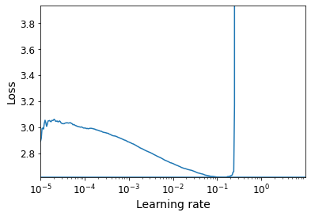
keras.backend.clear_session()
tf.random.set_seed(42)
np.random.seed(42)
model = keras.models.Sequential()
model.add(keras.layers.Flatten(input_shape=[32, 32, 3]))
for _ in range(20):
model.add(keras.layers.Dense(100,
kernel_initializer="lecun_normal",
activation="selu"))
model.add(keras.layers.AlphaDropout(rate=0.1))
model.add(keras.layers.Dense(10, activation="softmax"))
optimizer = keras.optimizers.SGD(learning_rate=1e-2)
model.compile(loss="sparse_categorical_crossentropy",
optimizer=optimizer,
metrics=["accuracy"])n_epochs = 15
onecycle = OneCycleScheduler(math.ceil(len(X_train_scaled) / batch_size) * n_epochs, max_rate=0.05)
history = model.fit(X_train_scaled, y_train, epochs=n_epochs, batch_size=batch_size,
validation_data=(X_valid_scaled, y_valid),
callbacks=[onecycle])Epoch 1/15
352/352 [==============================] - 3s 6ms/step - loss: 2.2298 - accuracy: 0.2349 - val_loss: 1.7841 - val_accuracy: 0.3834
Epoch 2/15
352/352 [==============================] - 2s 6ms/step - loss: 1.7928 - accuracy: 0.3689 - val_loss: 1.6806 - val_accuracy: 0.4086
Epoch 3/15
352/352 [==============================] - 2s 6ms/step - loss: 1.6475 - accuracy: 0.4190 - val_loss: 1.6378 - val_accuracy: 0.4350
Epoch 4/15
352/352 [==============================] - 2s 6ms/step - loss: 1.5428 - accuracy: 0.4543 - val_loss: 1.6266 - val_accuracy: 0.4390
Epoch 5/15
352/352 [==============================] - 2s 6ms/step - loss: 1.4865 - accuracy: 0.4769 - val_loss: 1.6158 - val_accuracy: 0.4384
Epoch 6/15
352/352 [==============================] - 2s 6ms/step - loss: 1.4339 - accuracy: 0.4866 - val_loss: 1.5850 - val_accuracy: 0.4412
Epoch 7/15
352/352 [==============================] - 2s 6ms/step - loss: 1.4042 - accuracy: 0.5056 - val_loss: 1.6146 - val_accuracy: 0.4384
Epoch 8/15
352/352 [==============================] - 2s 6ms/step - loss: 1.3437 - accuracy: 0.5229 - val_loss: 1.5299 - val_accuracy: 0.4846
Epoch 9/15
352/352 [==============================] - 2s 5ms/step - loss: 1.2721 - accuracy: 0.5459 - val_loss: 1.5145 - val_accuracy: 0.4874
Epoch 10/15
352/352 [==============================] - 2s 6ms/step - loss: 1.1942 - accuracy: 0.5698 - val_loss: 1.4958 - val_accuracy: 0.5040
Epoch 11/15
352/352 [==============================] - 2s 6ms/step - loss: 1.1211 - accuracy: 0.6033 - val_loss: 1.5406 - val_accuracy: 0.4984
Epoch 12/15
352/352 [==============================] - 2s 6ms/step - loss: 1.0673 - accuracy: 0.6161 - val_loss: 1.5284 - val_accuracy: 0.5144
Epoch 13/15
352/352 [==============================] - 2s 6ms/step - loss: 0.9927 - accuracy: 0.6435 - val_loss: 1.5449 - val_accuracy: 0.5140
Epoch 14/15
352/352 [==============================] - 2s 6ms/step - loss: 0.9205 - accuracy: 0.6703 - val_loss: 1.5652 - val_accuracy: 0.5224
Epoch 15/15
352/352 [==============================] - 2s 6ms/step - loss: 0.8936 - accuracy: 0.6801 - val_loss: 1.5912 - val_accuracy: 0.5198One cycle allowed us to train the model in just 15 epochs, each taking only 2 seconds (thanks to the larger batch size). This is several times faster than the fastest model we trained so far. Moreover, we improved the model’s performance (from 47.6% to 52.0%). The batch normalized model reaches a slightly better performance (54%), but it’s much slower to train.